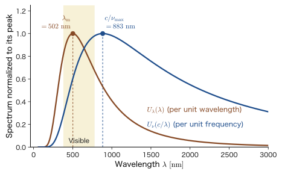
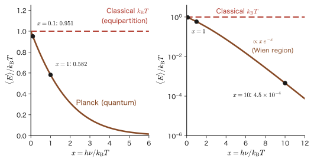

Chapter 3Blackbody Radiation and the Discovery of the Quantum — Wien, Rayleigh–Jeans, and Planck
When we heat an iron rod in a furnace, at first nothing is visible, but the way it glows gradually changes to dark red, orange, yellow, and finally a whitish light. Craftsmen in steelworks and glass factories have long judged the temperature by looking at the “color” inside the furnace. The color of the light emitted by a hot object is determined almost solely by its temperature, regardless of what kind of object it is. Behind this empirical law lies a universal law that does not depend on the kind of material. Ever since Kirchhoff pointed this out in 1859, physicists have tried to answer the question “What kind of function is the intensity $U(\nu)$, frequency by frequency, of the electromagnetic waves emitted by an object at temperature $T$?”
As measurements became more precise at the end of the 19th century, the form of this function became known from experiments. However, when this function was calculated from only the two pillars that were already complete at the time, Maxwell's electromagnetism and Boltzmann's statistical mechanics, it became infinite at high frequencies (the ultraviolet) and disagreed completely with experiment (the ultraviolet catastrophe). To rescue the theory from this breakdown, in 1900 Planck introduced the hypothesis, which classical physics cannot explain, that “the energy of an electromagnetic wave of frequency $\nu$ can take only values that are integer multiples of $h\nu$.” This $h$ is the Planck constant, and this hypothesis became the starting point of quantum mechanics. The feeling that “the common sense of classical physics does not apply,” which we saw in Part I, was historically discovered one at a time from such seemingly small discrepancies between experiment and theory. This chapter follows the course of experimental facts → breakdown of classical theory → Planck's resolution, without skipping a single line of the equations.
After that, from Planck's formula we derive Wien's displacement law and the Stefan–Boltzmann law, and apply them to topics spanning materials, energy, and the universe: the color of the Sun, the temperature of the Earth, the efficiency of an incandescent light bulb, cosmic background radiation, and radiation thermometers. The mathematical and statistical-mechanical aspects were also treated in the companion volumes University Mathematics (AD 02), Chapter 49 (Sections 49.2–49.5), and Introductory University Physics (AD 03), Chapter 53 (in Japanese) (Sections 53.2 (in Japanese)–53.6 (in Japanese)). This chapter has been rewritten from scratch, taking the history of physics (Kirchhoff → Wien → Rayleigh–Jeans → Planck) as its backbone, and including the parts that overlap with those books. Note that the spectral energy density $U(\nu)$ is the same quantity as $E(\nu)$ in AD 02 and $u(\nu,T)$ in AD 03. To distinguish it from the wavenumber $k$, the Boltzmann constant is written $k_{\mathrm{B}}$.
Road map of this part: Part II The Dawn of Quantum Theory (Chapter 3 through Chapter 8)
In Part II we follow the course from 1859, when quantum theory was born, to around 1927 in historical order, with the experimental facts as our backbone. The role of each chapter is as follows.
| Chapter | Years | What was discovered |
|---|---|---|
| Chapter 3 Blackbody radiation | 1859–1900 | Experimental laws of the thermal radiation spectrum (Kirchhoff, Wien), the breakdown of classical theory, and Planck's quantum hypothesis: the energy of electromagnetic waves comes in units of $h\nu$ |
| Chapter 4 The photoelectric effect | 1905 | Einstein's photon hypothesis: light behaves as particles with $E=h\nu$ |
| Chapter 5 Atomic spectra and the Bohr model | 1885–1925 | The energy of an atom takes discrete values. The quantum condition of the old quantum theory |
| Chapter 6 Compton scattering and matter waves | 1923–1927 | The photon has momentum $h/\lambda$. De Broglie: electrons are waves too. Diffraction of electron beams |
| Chapter 7 Electrons passing through slits | 1961–2019 (interference experiments with electrons and molecules) | Electrons flying one at a time build up interference fringes: wave nature and probability |
| Chapter 8 The axioms of quantum mechanics | 1926–1927 | The Born interpretation, commutation relations, and the uncertainty principle. On to the Schrödinger equation in Part III |
The $h$ of this chapter appears one after another in changing forms: in Chapter 4 as the minimum unit of light energy $E=h\nu$, in Chapter 5 as the unit of angular momentum $\hbar=h/2\pi$, in Chapter 6 as the relation to wavelength $p=h/\lambda$, and in Chapter 8 as the uncertainty relation $\Delta x\,\Delta p\ge\hbar/2$. The answer to the question “Why is quantum mechanics hard?” that we felt in Part I (Chapter 1) gradually becomes visible as we follow this one constant $h$.
- The meaning of thermal radiation, the blackbody, and Kirchhoff's law, and the meaning of the spectral energy density $U(\nu)$ (energy per unit volume and per unit frequency)
- Wien's displacement law $\lambda_mT=b$, and why the position of the spectral peak changes depending on whether we look at the spectrum in terms of wavelength or frequency
- Counting the standing waves in a box to derive the mode density $8\pi\nu^2/c^3$, and obtaining the Rayleigh–Jeans formula from the classical theory that assigns $k_{\mathrm{B}}T$ to each mode; and seeing that this formula breaks down in the ultraviolet
- Deriving $\langle E\rangle=h\nu/(e^{h\nu/k_{\mathrm{B}}T}-1)$ and Planck's formula from Planck's quantum hypothesis $E=nh\nu$ by means of the geometric series and a differentiation trick
- Deriving Wien's displacement law ($x=2.8214$ and $4.9651$) and the Stefan–Boltzmann law ($\sigma_{\mathrm{SB}}=2\pi^5k_{\mathrm{B}}^4/15h^3c^2$) from Planck's formula, and determining $h$ and $k_{\mathrm{B}}$ from experimental values
- Estimating, by means of blackbody radiation, the color of the Sun, the efficiency of an incandescent light bulb, the equilibrium temperature of the Earth, cosmic background radiation, and the two-color radiation thermometer
Source notes: Yasuhide Mochizuki, “Physics Notes: Quantum Mechanics 1,” pp. 6–8, and the page on which Planck's formula was derived (a photograph of the original notes).
3.1 Thermal Radiation and the Blackbody — Glowing Objects and Cavity Radiation
3.1.1 Hot objects glow — thermal radiation
The heater element of an electric heater glows dark red as its temperature rises. The filament of an incandescent light bulb is heated to about $2800\ \mathrm{K}$ ($\mathrm{K}$ is the unit of absolute temperature, $0\ ^\circ\mathrm{C}=273.15\ \mathrm{K}$) and glows yellowish white. The surface of the Sun (about $5800\ \mathrm{K}$) shines white. In this way, an object emits light when its temperature is high. This is called thermal radiation. Moreover, it is not only hot objects that glow. The human body (about $310\ \mathrm{K}$) also emits infrared radiation, which cannot be seen with the eye, and a thermographic camera is a device that photographs it. In other words, every object emits electromagnetic waves that correspond to its temperature.
As the temperature is raised, the electromagnetic waves emitted by an object change in the following two respects. First, the total amount of light emitted increases. Second, the components of the light (which frequencies of light are contained, and how much of each) change: at low temperatures there is a lot of infrared radiation, and as the temperature rises the proportion of visible light increases and the color changes to red, orange, yellow, and white. The blackbody radiation experiments were carried out to find out how this “energy of light at each frequency” behaves as the temperature rises. The goal of this chapter is to build a theory that explains the results of these experiments. In the course of doing so, we find the limitations of classical physics (Newtonian mechanics, Maxwell's electromagnetism, and Boltzmann's statistical mechanics), and quantum mechanics is born.
3.1.2 Spectral energy density $U(\nu)$ — what are we measuring?
First, let us decide clearly what quantity we measure. In thermal radiation experiments, we consider the electromagnetic waves that fill a cavity (a space enclosed by walls). How much energy per unit volume do the electromagnetic waves have? Furthermore, electromagnetic waves of which frequencies carry that energy? The following quantity expresses this.
Definition 3.1: Spectral energy density $U(\nu)$
In a cavity in thermal equilibrium at temperature $T$, the energy per unit volume of the electromagnetic waves whose frequencies lie between $\nu$ and $\nu+\dd\nu$ is written $U(\nu)\,\dd\nu$, and $U(\nu)$ is called the spectral energy density. When we want to show the temperature explicitly, we write $U(\nu,T)$. Its unit is $\mathrm{J\,m^{-3}\,Hz^{-1}}=\mathrm{J\,s\,m^{-3}}$. The frequency $\nu$ is the number of oscillations in one second (unit $\mathrm{Hz}$), $\omega=2\pi\nu$ is the angular frequency, and the wavelength is $\lambda=c/\nu$ ($c$ is the speed of light). The energy density over all frequencies is $u=\displaystyle\int_0^\infty U(\nu)\,\dd\nu$.
Note that only after multiplying $U(\nu)$ by $\dd\nu$ do we obtain (a density of) energy. $U(\nu)$ itself is a quantity “per $1\ \mathrm{Hz}$ of frequency width,” and integrating over $\nu$ gives the total energy density. Similarly, the quantity counted by wavelength, $U_\lambda(\lambda)$ (per unit wavelength), will also be used later (Section 3.2). This quantity is the same as what was written $E(\nu)$ in AD 02 and $u(\nu,T)$ in AD 03.
Question: What does the vertical axis count?
On the vertical axis of the graph of the experimental results (Figure 3.2 in Section 3.2), we plot a quantity that expresses the “energy of light at each frequency.” One might be tempted to regard this as “the number of light waves at that frequency,” but that is not so. The vertical axis is the energy density $U(\nu)$, not the number of waves. The relation between the number of waves and the energy is as follows. Near the frequency $\nu$ there are many types of electromagnetic wave (modes) that can oscillate independently inside the cavity; if their number (per unit volume and per unit frequency) is $g(\nu)$, and the average energy of one mode is $\langle E\rangle$, then
$$ U(\nu)=g(\nu)\,\langle E\rangle $$holds. It is $g(\nu)$ that corresponds to the “number of light waves.” In other words, the value on the vertical axis is determined by the product of the number of waves ($g$) and the energy that one wave has on average ($\langle E\rangle$). This decomposition is the key to understanding the Rayleigh–Jeans formula (Section 3.3) and Planck's formula (Section 3.4). We find $g(\nu)$ in Section 3.3.4, and $\langle E\rangle$ in Section 3.3.5 (classical theory) and Section 3.4 (quantum theory).
3.1.3 Blackbody — an ideal object that absorbs light completely
In an experiment, it would be a problem if the intensity of the radiation differed with the kind of material. Any object, while it emits light, also absorbs or reflects light coming from outside, so even if we measure the “light that the object emits,” the properties of that object (for example, whether its surface is white or black) get mixed in. We therefore consider an “ideal object” that does not depend on the fine properties of the material.
Definition 3.2: Blackbody
An ideal object that absorbs light of all wavelengths (frequencies) and has a reflectance of $0$ for light is called a blackbody.
Writing the absorptivity (the fraction of the incident light that is absorbed) as $\mathcal{A}(\nu,T)$, we have $\mathcal{A}=1$ at all frequencies for a blackbody. The name “blackbody” comes from the fact that it absorbs all the light coming from outside (and does not reflect it). Note that a blackbody does not necessarily look black. If a blackbody becomes hot, it emits light by itself and glows red or white. The Sun is a typical example of a celestial body that can be regarded as nearly a blackbody. A blackbody is black only in the sense that it does not reflect light; the color of the light it emits is determined by its temperature.
3.1.4 The purpose of the experiment — a small hole in a box
Then how do we actually make a blackbody? Let us organize, step by step, the purpose of the experiment and its line of argument.
- Since a blackbody is also an object, it emits electromagnetic waves if it has heat.
- And a blackbody immediately absorbs those electromagnetic waves.
- ⇩ Then an equilibrium state is reached in which the amount emitted and the amount absorbed balance.
- ⇩ Making use of this, we make a hole in a box that is (close to) a blackbody and examine the electromagnetic waves in the equilibrium state that come from it.
Figure 3.1 shows the idea of this experiment. When we heat a box whose inner walls absorb light well, the walls emit electromagnetic waves, which are absorbed by the walls again while being reflected repeatedly inside the box. When the temperature rises (Figure 3.1(b)), more electromagnetic waves are emitted and, at the same time, continue to be absorbed. When the amount emitted and the amount absorbed balance, the electromagnetic waves in the box are in a thermal equilibrium state at temperature $T$.
If we make a small hole in the wall of the box and examine the electromagnetic waves leaking out of it with a spectroscope, we learn the spectrum of the electromagnetic waves in equilibrium inside the box. If the hole is sufficiently small, the electromagnetic waves leaking out of it hardly disturb the equilibrium inside the box. Moreover, this hole itself plays the role of a blackbody. Light that enters through the hole is gradually absorbed while being reflected many times by the inner wall of the box, and most of it is absorbed before it can come out through the hole again. Seen from the outside, the hole “absorbs all the light that enters”; that is, it is a blackbody. This cavity radiation is what is used in blackbody radiation experiments.
Example 3.1: Why a hole acts as a blackbody — the effective absorptivity of a cavity
A cavity whose inner walls have a total area $S_{\mathrm{wall}}$ has a small hole of area $a_{\mathrm h}$ in it. Suppose the wall reflects a fraction $\rho$ of the incident light and absorbs the remaining fraction $1-\rho$. Suppose also that the reflection is diffuse (in random directions) and that the probability that light reflected by the wall enters the hole and escapes is equal to the fraction $f=a_{\mathrm h}/S_{\mathrm{wall}}$ of the entire inner wall that the hole occupies. Find the probability $\alpha_{\mathrm{eff}}$ (the effective absorptivity) that light entering through the hole is ultimately absorbed inside the cavity. Also find its value for $f=0.01$ in the cases (i) white porcelain ($\rho=0.9$) and (ii) a wall coated with soot ($\rho=0.05$).
Solution. Each time the light strikes the wall, (a) with probability $1-\rho$ it is absorbed and that is the end of it, or (b) with probability $\rho$ it is reflected, and after the reflection it escapes through the hole with probability $f$ and strikes the next part of the wall with probability $1-f$. Let $P$ be the probability that the light finally escapes after it first strikes the wall. After that first strike, the probability of escaping is the sum of two contributions: the light escapes in case (b), or it does not escape, strikes the wall once more (from which point on the situation is the same as at the beginning), and escapes from there; therefore we have
$$ P=\rho\,f+\rho\,(1-f)\,P\qquad\therefore\quad P=\frac{\rho f}{1-\rho(1-f)} $$(The expression on the right is the solution of the left-hand equation for $P$. In the left-hand equation, the first term is the case in which the light escapes at the first reflection, and the second term is the case in which it does not escape and is carried over to the second and later reflections. Since $\rho(1-f)\lt1$, the infinite geometric series $\rho f\sum_{k=0}^\infty[\rho(1-f)]^k$ obtained by substituting this $P$ repeatedly converges and gives the same value.) Since the probability of absorption is $1-P$, we have
$$ \alpha_{\mathrm{eff}}=1-P=\frac{1-\rho(1-f)-\rho f}{1-\rho(1-f)}=\frac{1-\rho}{1-\rho+\rho f} $$(i) For $\rho=0.9$ and $f=0.01$, $\alpha_{\mathrm{eff}}=\dfrac{0.1}{0.1+0.9\times0.01}=\dfrac{0.1}{0.109}=0.917$. (ii) For $\rho=0.05$ and $f=0.01$, $\alpha_{\mathrm{eff}}=\dfrac{0.95}{0.95+0.05\times0.01}=\dfrac{0.95}{0.9505}=0.9995$.
The absorptivity of the wall itself is $0.1$ in (i) and $0.95$ in (ii), but the effective absorptivity of the hole is $0.917$ in (i) and $0.9995$ in (ii), much closer to $1$ than that of the wall itself. As $f\to0$ (making the hole smaller), $\alpha_{\mathrm{eff}}\to1$, so the hole approaches a blackbody regardless of the material of the wall. Even for the white porcelain of (i), making the fraction of the hole $f=0.001$ gives $\alpha_{\mathrm{eff}}=0.9911$.
3.1.5 Kirchhoff's law of thermal radiation — the blackbody spectrum is independent of the material
An important question arises here. Might the spectrum of cavity radiation differ depending on the material and shape of the cavity? If it did, there would be no point in looking for a universal function called “the spectrum of blackbody radiation.” This question was answered by Kirchhoff's analysis of 1859–1860.
Law 3.1: Kirchhoff's law of thermal radiation
For a body in thermal equilibrium, the ratio of the radiant exitance (also called the “emissive power”) $M(\nu,T)$ of light of frequency $\nu$ (the energy emitted per unit surface area, per unit time, and per unit frequency; it is a different quantity from the “radioactivity” of radioactive substances) to the absorptivity $\mathcal{A}(\nu,T)$ (the fraction of the incident light that is absorbed) is a universal function determined only by $\nu$ and $T$, independent of the material, shape, and surface condition of the body:
$$ \frac{M(\nu,T)}{\mathcal{A}(\nu,T)}=M_{\mathrm{bb}}(\nu,T)\qquad\Bigl(=\frac{c}{4}\,U(\nu,T)\Bigr) $$For a blackbody, with $\mathcal{A}=1$, we have $M=M_{\mathrm{bb}}$, so the right-hand side is the radiant exitance of a blackbody. The expression $\dfrac{c}{4}U$ in parentheses gives the relation to the spectral energy density $U(\nu,T)$ of cavity radiation; the factor $\dfrac{c}{4}$ is derived in Section 3.5.2.
Derivation (key points)
Place a body A in a cavity whose walls are kept at temperature $T$. The radiation inside the cavity is in thermal equilibrium, and we denote its spectral energy density by $U(\nu,T)$. The radiation is isotropic, and energy $\dfrac{c}{4}U(\nu,T)$ per unit area, per unit time, and per unit frequency is incident on the surface of A. A absorbs only the fraction $\mathcal{A}(\nu,T)$ of it. In thermal equilibrium the temperature of A remains $T$, and absorption and emission balance at each frequency (if they did not balance, a flow of heat would arise between A and the cavity at certain frequencies only). Therefore the radiant exitance of A is $M=\mathcal{A}\cdot\dfrac{c}{4}U$, that is,
$$ \frac{M(\nu,T)}{\mathcal{A}(\nu,T)}=\frac{c}{4}\,U(\nu,T) $$The right-hand side contains no property of A. Moreover, $U(\nu,T)$ must be the same even if the material or shape of the cavity changes. Suppose that two cavities X and Y at the same temperature had different spectra. Then, if X and Y were connected by a thin window that passes only a certain frequency, heat would flow spontaneously between two bodies at the same temperature, which contradicts the second law of thermodynamics. Hence $U(\nu,T)$ is a function of $\nu$ and $T$ only, independent of the properties of the cavity.
∎
Kirchhoff's law tells us two things. (1) The spectrum $U(\nu,T)$ of blackbody radiation is a universal function independent of the material. Therefore the problem “find this function” stands as an important problem in physics. (2) The radiant exitance of a general body can be written $M=\varepsilon\,M_{\mathrm{bb}}$. Here $\varepsilon=\mathcal{A}$ is the emissivity (a quantity distinct from the vacuum permittivity $\varepsilon_0$), and $0\le\varepsilon\le1$. A body that absorbs light well also glows well. Conversely, a body that reflects light well (a polished metal) glows poorly.
In 1899–1900, Lummer and Pringsheim and their colleagues measured with high accuracy the radiation coming out of the hole of a cavity heated in an electric furnace, and gave experimental curves of $U(\nu,T)$. In the next section we look at their results.
Application: Red-hot materials, radiation thermometers, and differences in emissivity among materials
Smiths who quench metal have long read the temperature of steel from the color in which it glows: “dark red,” “cherry red,” and “orange.” The temperature inside a blast furnace or a glass furnace is likewise measured from the light seen through a hole in the furnace. These are all temperature measurements that make use of the properties of blackbody radiation. A modern radiation thermometer detects the infrared radiation emitted by an object and converts it into a temperature. If the object being measured is not a blackbody, its radiation is weaker by the factor of its emissivity $\varepsilon\lt1$, and, left uncorrected, the thermometer reads too low a temperature. Emissivity differs greatly from material to material: it is small, $0.1$ or less, on the surface of a polished metal, and large, about $0.8$–$0.9$, for oxidized metals, ceramics, glass, and the like. When a radiation thermometer is used on a strongly reflecting metal surface, a correction for the emissivity is necessary (the two-color radiation thermometer of Example 3.14 is one device for avoiding this problem).
3.2 Wien's Displacement Law — Temperature and the Peak of the Spectrum
3.2.1 Experimental results — the distribution of electromagnetic waves leaking from the hole
When the electromagnetic waves leaking out of the hole of a blackbody are examined with a spectroscope by the method of Section 3.1, we obtain a distribution like the one in Figure 3.2. The vertical axis is the energy density $U(\nu)$ carried by electromagnetic waves near frequency $\nu$, and the horizontal axis is the frequency $\nu$. Three curves for different temperatures ($1000\ \mathrm{K}$, $1500\ \mathrm{K}$, $2000\ \mathrm{K}$) are superimposed. The intensity of the light emerging from the hole is proportional to the spectral energy density $U(\nu)$ inside the cavity (the constant of proportionality $c/4$ is derived in Section 3.5.2), so the shape of the measured curve is the same as that of $U(\nu)$. Note that the curves in Figure 3.2 were drawn by calculation from the formula of Section 3.4, which reproduces the measured curves well.

The following can be read off from the experimentally obtained distribution.
- At every temperature, the spectrum rises from $\nu=0$, has a single peak, and then decreases gently on the high-frequency side.
- As the temperature rises, $U(\nu)$ becomes larger at every frequency (the curves do not cross), and the total amount of emitted light increases.
- As the temperature rises, the peak of the spectrum of the emitted light shifts to the high-frequency side.
That red-hot iron changes color to orange, yellow, and white as its temperature rises is a manifestation of the last point, the shift of the peak. In the temperature range of Figure 3.2, the peak lies in the infrared region ($\nu\approx5.9\times10^{13}\ \mathrm{Hz}$ at $1000\ \mathrm{K}$ and $1.2\times10^{14}\ \mathrm{Hz}$ at $2000\ \mathrm{K}$, whereas visible light lies between $4\times10^{14}$ and $8\times10^{14}\ \mathrm{Hz}$), but the tail on the high-frequency side extends into the visible region, and the light appears red to that extent.
3.2.2 Wien's displacement law — the peak wavelength is inversely proportional to temperature
Wilhelm Wien took this result a step further and investigated how the position of the peak is related to the temperature. In spectroscope experiments, the spectrum is often measured as a function of the wavelength $\lambda$, so we introduce a spectral energy density counted by wavelength.
Definition 3.3: Spectral energy density per unit wavelength $U_\lambda(\lambda)$
The energy, per unit volume, of the electromagnetic waves whose wavelengths lie between $\lambda$ and $\lambda+\dd\lambda$ is denoted $U_\lambda(\lambda)\,\dd\lambda$. Since the energy of the same electromagnetic waves is the same whether it is counted by frequency or by wavelength, using $\nu=c/\lambda$ and $\abs{\dd\nu}=(c/\lambda^2)\dd\lambda$ we find that
\begin{equation} U_\lambda(\lambda)\,\dd\lambda=U(\nu)\,\abs{\dd\nu}\qquad\therefore\quad U_\lambda(\lambda)=\frac{c}{\lambda^2}\,U\!\left(\frac{c}{\lambda}\right) \label{eq:3-Ulam} \end{equation}holds.
The wavelength $\lambda_m$ at which the spectral energy density $U_\lambda$ of the light emitted by a body is largest is inversely proportional to the absolute temperature $T$. This relation was derived by Wien in 1893 from a thermodynamic argument (Section 3.2.4); the value of the constant of proportionality $b$ is fixed by experiment, and the relation was later confirmed by the measurements of cavity radiation by Lummer and Pringsheim and by the measurements of Paschen and others.
Law 3.2: Wien's displacement law
The wavelength $\lambda_m$ at which the spectral energy density (per unit wavelength) of blackbody radiation is maximum is inversely proportional to the absolute temperature $T$:
\begin{equation} \lambda_m=\frac{b}{T}\qquad\text{that is}\quad \lambda_mT=b \label{eq:3-wien} \end{equation}The constant of proportionality $b=2.897\,771\,955\times10^{-3}\ \mathrm{m\,K}$ ($\approx2.90\times10^{-3}\ \mathrm{m\,K}$) is called the Wien displacement constant.
If the temperature doubles, the peak wavelength is halved. Because the “displacement” (shift) of the curves in Figure 3.2 occurs in proportion to the temperature (in inverse proportion to it in terms of wavelength), the law is called the displacement law. This $b$ is derived from Planck's formula in Section 3.5.1 as $b=hc/(4.9651\,k_{\mathrm{B}})$ (in Wien's argument of 1893, the value of the constant of proportionality $b$ could only be fixed by experiment).
3.2.3 The meaning of $\nu_m=c/\lambda_m$ — viewing it by wavelength or by frequency
Rewriting Eq. \eqref{eq:3-wien} to find the frequency $\nu_m=c/\lambda_m$ of light of wavelength $\lambda_m$, we obtain
\begin{equation} \nu_m=\frac{c}{\lambda_m}=\frac{c}{b}\cdot T\qquad(c:\text{speed of light}) \label{eq:3-nu-m} \end{equation}Since $c/b=1.0346\times10^{11}\ \mathrm{Hz/K}$, $\nu_m$ is proportional to the temperature. This shows that the higher the temperature, the higher the frequency of the light at the peak. However, care is needed about the meaning of $\nu_m$ in this equation.
Caution: $c/\lambda_m$ is not the peak of the spectrum plotted against frequency
In Eq. \eqref{eq:3-nu-m}, $\nu_m=c/\lambda_m$ is the frequency of light at the peak wavelength $\lambda_m$ of the spectrum $U_\lambda(\lambda)$ plotted against wavelength. It must not be confused with the peak frequency $\nu_{\max}$ of the spectrum with frequency on the horizontal axis $U(\nu)$, as in Figure 3.2. The two do not coincide. As we derive in Section 3.5.1, for Planck's formula
$$ \nu_{\max}=2.8214\,\frac{k_{\mathrm{B}}T}{h}=5.879\times10^{10}\ \mathrm{Hz/K}\times T,\qquad \frac{c}{\lambda_m}=4.9651\,\frac{k_{\mathrm{B}}T}{h}=1.0346\times10^{11}\ \mathrm{Hz/K}\times T $$holds, and $c/\lambda_m$ is about $1.76$ times $\nu_{\max}$ ($=4.9651/2.8214$). Since both are proportional to the temperature, the conclusion itself, that “the peak moves to the high-frequency side as the temperature rises,” does not change. The difference arises because the shape of the spectrum changes depending on whether the energy of the same light is counted by wavelength or by frequency.
Let us see this difference in Figure 3.3. For a blackbody at $T=5772\ \mathrm{K}$, close to the surface temperature of the Sun, the spectrum on the wavelength basis $U_\lambda(\lambda)$ and the spectrum on the frequency basis $U(\nu)$ mapped onto the wavelength axis $\lambda=c/\nu$ are overlaid, each normalized by its own maximum value. The peak of the former is at $502\ \mathrm{nm}$ and that of the latter is at $c/\nu_{\max}=883\ \mathrm{nm}$, which are entirely different positions.

Intuition: Why does the peak move depending on the “way of counting”?
The distribution of the energy of a given light is a single physical entity. However, the shape of the graph changes depending on how we express it, namely “how much per what small slice of the horizontal axis.” The frequency width corresponding to a slice of width $\Delta\lambda$ near wavelength $\lambda$ is $\Delta\nu=(c/\lambda^2)\Delta\lambda$, which is larger at shorter wavelengths. Since the energy contained in the same slice does not change, the value $U_\lambda$, obtained by dividing by the wavelength width, is boosted on the short-wavelength side relative to the value $U$, obtained by dividing by the frequency width. As a result, the peak counted by wavelength lies closer to the short-wavelength (high-frequency) side than the peak counted by frequency. The following example shows this effect in the most extreme case.
Example 3.2: Even for the same light, the “peak” changes with the way of counting
Consider a spectrum whose energy density is uniform in frequency, that is, $U(\nu)=U_0$ (a constant) for $4.0\times10^{14}\ \mathrm{Hz}\le\nu\le8.0\times10^{14}\ \mathrm{Hz}$ and $0$ outside this range (this corresponds approximately to the range of visible light). (a) Find the spectral energy density per unit wavelength $U_\lambda(\lambda)$ and state the wavelength at which it is maximum. (b) Find the frequency $\nu_{1/2}$ and the wavelength $\lambda_{1/2}$ that contain exactly half of the total energy, and verify that $\lambda_{1/2}=c/\nu_{1/2}$.
Solution. (a) The wavelengths corresponding to $\nu_1=4.0\times10^{14}\ \mathrm{Hz}$ and $\nu_2=8.0\times10^{14}\ \mathrm{Hz}$ are $\lambda_1=c/\nu_2=3.747\times10^{-7}\ \mathrm{m}=374.7\ \mathrm{nm}$ and $\lambda_2=c/\nu_1=749.5\ \mathrm{nm}$. From Eq. \eqref{eq:3-Ulam}, for $\lambda_1\le\lambda\le\lambda_2$ we have
$$ U_\lambda(\lambda)=\frac{c}{\lambda^2}\,U_0 $$This is a monotonically decreasing function of $\lambda$, so its maximum value is attained at the edge of the range, $\lambda=\lambda_1=374.7\ \mathrm{nm}$. On the other hand, $U(\nu)$ is uniform and has no special “peak.” Although this is the same distribution of light, it is a flat plateau on the frequency basis, whereas on the wavelength basis it is a curve falling toward the right with its maximum at the short-wavelength end, so the position of the “most intense component” changes.
(b) The total energy is $U_0(\nu_2-\nu_1)$. Counting by frequency, the condition that the energy from $\nu_1$ to $\nu_{1/2}$ be half of the total is $U_0(\nu_{1/2}-\nu_1)=\dfrac12U_0(\nu_2-\nu_1)$, that is, $\nu_{1/2}=\dfrac{\nu_1+\nu_2}{2}=6.0\times10^{14}\ \mathrm{Hz}$, and the corresponding wavelength is $c/\nu_{1/2}=499.6\ \mathrm{nm}$. Counting by wavelength, the energy from $\lambda_1$ to $\lambda_{1/2}$ is $\displaystyle\int_{\lambda_1}^{\lambda_{1/2}}\frac{cU_0}{\lambda^2}\dd\lambda=cU_0\left(\frac1{\lambda_1}-\frac1{\lambda_{1/2}}\right)$, and from the condition that this equal half of the total, $\dfrac12cU_0\left(\dfrac1{\lambda_1}-\dfrac1{\lambda_2}\right)$, we obtain $\dfrac1{\lambda_{1/2}}=\dfrac12\left(\dfrac1{\lambda_1}+\dfrac1{\lambda_2}\right)$, that is, $\dfrac{c}{\lambda_{1/2}}=\dfrac{\nu_2+\nu_1}{2}$. Hence $\lambda_{1/2}=c/\nu_{1/2}=499.6\ \mathrm{nm}$: whether we count by frequency or by wavelength, the point that divides the energy in half corresponds to the same light. The peak (the position of the maximum of the distribution) depends on the way of counting, but the “point that divides the energy in half” does not.
3.2.4 Wien's theoretical argument and Wien's radiation formula
In 1893, Wien presented the following argument from thermodynamics. Considering an adiabatic expansion and compression of a cavity (when a wall moves, the frequency of the reflected light is shifted by the Doppler effect), he showed that the spectrum must have the following form.
\begin{equation} U(\nu,T)=\nu^3\,f\!\left(\frac{\nu}{T}\right) \label{eq:3-wien-scaling} \end{equation}Here $f$ is a function of $\nu/T$ only (the theoretical form of Wien's displacement law). If we accept this form, Eq. \eqref{eq:3-wien} follows.
Derivation: From the scaling form to the displacement law
Let $y=\nu/T$. Then Eq. \eqref{eq:3-wien-scaling} becomes $U=T^3y^3f(y)$. Fixing the temperature $T$ and differentiating with respect to $\nu$, and using $\dfrac{\dd y}{\dd\nu}=\dfrac1T$, we obtain
$$ \frac{\dd U}{\dd\nu}=T^3\,\frac{\dd\,[y^3f(y)]}{\dd y}\,\frac1T=T^2\,\frac{\dd\,[y^3f(y)]}{\dd y} $$At the peak, $\dd U/\dd\nu=0$, so $\dfrac{\dd\,[y^3f(y)]}{\dd y}=0$. The solution $y=y_*$ of this equation is a constant determined only by the function $f$, and it does not contain the temperature $T$. Hence $\nu_{\max}/T=y_*$, that is, $\nu_{\max}=y_*T$ (the peak frequency is proportional to the temperature). The same holds on a wavelength basis: substituting $\nu=c/\lambda$ into Eq. \eqref{eq:3-Ulam}, we obtain
$$ U_\lambda(\lambda)=\frac{c}{\lambda^2}\left(\frac{c}{\lambda}\right)^3f\!\left(\frac{c}{\lambda T}\right)=\frac{c^4}{\lambda^5}\,f\!\left(\frac{c}{\lambda T}\right)=T^5\,\frac{c^4}{(\lambda T)^5}\,f\!\left(\frac{c}{\lambda T}\right) $$and, apart from the factor $T^5$, $U_\lambda$ is a function of the product $\lambda T$ only. Therefore, the solution of the equation obtained by fixing the temperature, differentiating with respect to $\lambda$, and setting the result equal to $0$ has the form $\lambda T=$ constant, that is, $\lambda_mT=b$.
∎
The scaling form \eqref{eq:3-wien-scaling} alone determines neither the form of the function $f$ nor the constant $y_*$ (that is, the value of $b$). So in 1896 Wien assumed that the molecules of the wall obey the Maxwell velocity distribution and that the frequency of the radiation is tied to the speed of a molecule, and from this assumption he derived a formula in which $f$ is an exponential function (at that time neither $h$ nor $k_{\mathrm{B}}$ had appeared in the theory of radiation, and $A_{\mathrm{W}}$ and $\beta$ below were treated as constants to be determined by experiment):
\begin{equation} U(\nu)=A_{\mathrm{W}}\,\nu^3\,e^{-\beta\nu/T}\qquad(A_{\mathrm{W}},\ \beta\text{ are constants}) \label{eq:3-wien-law} \end{equation}This is Wien's radiation formula. As we shall see, if we set $A_{\mathrm{W}}=8\pi h/c^3$ and $\beta=h/k_{\mathrm{B}}$, it coincides with the high-frequency limit of Planck's formula derived in Section 3.4 (the exponential factor $e^{-\beta\nu/T}=e^{-h\nu/k_{\mathrm{B}}T}$ is then nothing other than a Boltzmann factor). However, this interpretation involving $h$ is an understanding that came after Planck; Wien in 1896 did not yet know it. Precise measurements on the short-wavelength side (infrared radiation at $1$–$8\ \mathrm{\mu m}$) by Paschen and others agreed well with Wien's formula. But when the measurements were extended to the long-wavelength side, it turned out that Eq. \eqref{eq:3-wien-law} begins to deviate from experiment (Section 3.3.3).
Example 3.3: Reading temperature with the displacement law
Using Wien's displacement law $\lambda_mT=b$ ($b=2.898\times10^{-3}\ \mathrm{m\,K}$), find the peak wavelength $\lambda_m$ of the thermal radiation emitted by each of the following objects, and state which region of the electromagnetic spectrum it belongs to. (a) The surface of the Sun ($5772\ \mathrm{K}$), (b) the filament of an incandescent light bulb ($2800\ \mathrm{K}$), (c) a blast furnace ($1500\ ^\circ\mathrm{C}$), (d) the human body ($310\ \mathrm{K}$), (e) the cosmic background radiation ($2.725\ \mathrm{K}$).
Solution. Substitute each temperature into $\lambda_m=b/T$. For (c), convert to $T=1500+273=1773\ \mathrm{K}$ (we divide by a quantity in $\mathrm{K}$, so the temperature must be entered as an absolute temperature).
| Object | $T\ [\mathrm{K}]$ | $\lambda_m=b/T$ | Region |
|---|---|---|---|
| (a) Surface of the Sun | $5772$ | $\dfrac{2.898\times10^{-3}}{5772}=5.02\times10^{-7}\ \mathrm{m}=502\ \mathrm{nm}$ | Visible light (blue-green) |
| (b) Incandescent light bulb | $2800$ | $\dfrac{2.898\times10^{-3}}{2800}=1.035\times10^{-6}\ \mathrm{m}=1.03\ \mathrm{\mu m}$ | Near-infrared |
| (c) Blast furnace | $1773$ | $\dfrac{2.898\times10^{-3}}{1773}=1.63\times10^{-6}\ \mathrm{m}=1.63\ \mathrm{\mu m}$ | Near-infrared |
| (d) Human body | $310$ | $\dfrac{2.898\times10^{-3}}{310}=9.35\times10^{-6}\ \mathrm{m}=9.35\ \mathrm{\mu m}$ | Infrared (thermal infrared) |
| (e) Cosmic background radiation | $2.725$ | $\dfrac{2.898\times10^{-3}}{2.725}=1.063\times10^{-3}\ \mathrm{m}=1.06\ \mathrm{mm}$ | Microwave |
(a) The Sun's peak lies near the middle of the visible light range and is close to the wavelength at which the sensitivity of the human eye is highest (about $555\ \mathrm{nm}$). (b) The peak of an incandescent light bulb lies in the near-infrared, outside the visible region ($380$–$780\ \mathrm{nm}$), so most of its radiation is infrared (Example 3.12 in Section 3.5.4). (c) A blast furnace looks red because, although its peak is in the near-infrared, the tail of the spectrum extends over the red edge of the visible region. (d) The human-body peak, $9.35\ \mathrm{\mu m}$, falls within the wavelength range used by thermography (roughly $8$–$14\ \mathrm{\mu m}$). (e) The peak of the cosmic background radiation is around $1\ \mathrm{mm}$, which is in the microwave region.
Application: Star colors, incandescent lamps and LEDs, and reading an object's temperature from its “color”
The color of a star tells us its surface temperature. A red star such as Betelgeuse (about $3600\ \mathrm{K}$) has its peak in the infrared, and a bluish-white star such as Sirius (about $9940\ \mathrm{K}$) has its peak in the ultraviolet (Exercise 3.1). By the same principle, at steelmaking sites the temperature is estimated from the color of the glowing steel. Incidentally, if the filament of an incandescent light bulb could be made much hotter than $2800\ \mathrm{K}$, the peak could be moved closer to the visible region and the efficiency raised, but the melting point of the metal (about $3700\ \mathrm{K}$ for tungsten) sets the upper limit.
Related simulator: Planck's formula (temperature and the color of light). When you enter a temperature, the blackbody spectrum and the color seen by the eye are displayed.
3.3 Breakdown of Classical Theory — The Rayleigh–Jeans Formula and the Ultraviolet Catastrophe
3.3.1 Is an electromagnetic wave a classical wave? — the contradiction in the thermal radiation spectrum
So far we have been discussing experiments. Next, we ask whether this experimental result can be explained by theory.
Maxwell's equations predict that the oscillations of the electric and magnetic fields in vacuum have solutions that are waves propagating through space, that is, electromagnetic waves (for the derivation, see AD 03, Chapter 42, Section 42.3 (in Japanese)). In 1888 Hertz generated and detected electromagnetic waves experimentally, and it was established that light is a kind of electromagnetic wave. That light is a continuous wave that exhibits interference and diffraction was the firmly established picture of physics at the end of the 19th century.
However, it was a contradiction in the spectrum of the electromagnetic waves emitted by a heated body (thermal radiation) that made people realize that the description of electromagnetic waves as classical waves breaks down. As in Section 3.1, $U(\nu)=g(\nu)\langle E\rangle$ (the number of modes × the average energy per mode), so using only the two pillars of classical physics, namely electromagnetic waves as waves (Maxwell) and the statistics of thermal equilibrium (Boltzmann), we should be able to calculate $U(\nu)$. The result of the calculation actually carried out by Rayleigh and Jeans is the following formula.
3.3.2 The Rayleigh–Jeans formula
Formula 3.1: Rayleigh–Jeans formula
The spectral energy density of cavity radiation obtained from classical electromagnetic waves and classical statistical mechanics is given by
\begin{equation} U(\nu)\,\dd\nu=\frac{8\pi\nu^2}{c^3}\cdot k_{\mathrm{B}}T\,\dd\nu \label{eq:3-rj} \end{equation}Here $k_{\mathrm{B}}$ is the Boltzmann constant ($k_{\mathrm{B}}=1.380\,649\times10^{-23}\ \mathrm{J/K}$).
Rayleigh showed the form proportional to $\nu^2T$ in 1900, and Jeans determined the coefficient correctly in 1905. The derivation of this formula (where $8\pi\nu^2/c^3$ comes from, and where $k_{\mathrm{B}}T$ comes from) is carried out in Sections 3.3.4 and 3.3.5. Here, let us check the meaning and the units of the formula. The unit of $\dfrac{8\pi\nu^2}{c^3}$ is $\dfrac{\mathrm{s^{-2}}}{\mathrm{m^3\,s^{-3}}}=\mathrm{s\,m^{-3}}$, and multiplying this by $k_{\mathrm{B}}T$ (an energy, with unit $\mathrm{J}$) gives $\mathrm{J\,s\,m^{-3}}$, which agrees with the unit of the spectral energy density $U(\nu)$ of Definition 3.1. As the formula shows, the classical answer is proportional to the temperature and proportional to the square of the frequency.
How to remember: $8\pi\,c^{-3}\,\nu^2$
The coefficient $8\pi\,c^{-3}\,\nu^2$ of this formula can be remembered with a Japanese mnemonic (a wordplay): “Yappa Mī-san wa nyūji” (“After all, Mr. Mī is an infant”). “Yat (8) pa (π)” gives $8\pi$, “Mī ($c$) san (3)” gives $c^{-3}$ ($c$ to the power $-3$), and “nyū (nu, $\nu$) ji (jijō, square, the power 2)” gives $\nu^2$. [This works only in Japanese: “yat-” is from yattsu, “eight”; “pa” is from pai, the reading of π; “mī” stands for c; “san” is “three”; “nyū” is the Greek letter ν read aloud; and “ji” is from jijō, “square.”] All that remains is to multiply by $k_{\mathrm{B}}T$. If you remember it as “$8\pi$ in the numerator, $c^3$ in the denominator, $\nu^2$ in the numerator,” it is also easy to compare with $\dfrac{8\pi h\nu^3}{c^3}$ in Planck's formula (Section 3.4).
3.3.3 Comparison with experiment — the ultraviolet catastrophe
Let us compare the Rayleigh–Jeans formula with the measured spectrum. Figure 3.4 overlays three curves for cavity radiation at $T=3000\ \mathrm{K}$: the Rayleigh–Jeans formula (dashed line), Wien's formula (dotted line), and Planck's formula (solid line, Section 3.4), which reproduces the measurements (left: ordinary scales; right: log–log scales).
![A figure comparing the spectrum of cavity radiation at T = 3000 K using three formulas. On the left, with ordinary scales on both axes, the Rayleigh–Jeans formula keeps increasing in proportion to the square of the frequency and exceeds the top of the figure, while Planck's formula has a peak near 1.8 times 10 to the 14th power Hz and approaches 0 at 8 times 10 to the 14th power Hz. Wien's formula nearly overlaps Planck's formula from near the peak toward the high-frequency side. On the right, in a log–log plot, at low frequencies the Rayleigh–Jeans formula is a straight line of slope 2 that coincides with Planck's formula, and Wien's formula is a straight line of slope 3 lying below Planck's formula. At high frequencies Planck's formula and Wien's formula coincide and fall off steeply, but the Rayleigh–Jeans formula keeps increasing as a straight line.](figs/ch03_fig3-4.svg)
Let us summarize what Figure 3.4 shows.
- Low-frequency side (far-infrared): The Rayleigh–Jeans formula agrees well with the measurements. This was also confirmed by the measurements that Rubens and Kurlbaum made in 1900 with far-infrared radiation of wavelengths of several tens of $\mathrm{\mu m}$. Wien's formula (the straight line of slope $3$) deviates from the measurements.
- High-frequency side (visible and ultraviolet): Wien's formula agrees well with the measurements, but the Rayleigh–Jeans formula greatly exceeds them and increases without limit as $\nu$ increases.
The difficulty of the Rayleigh–Jeans formula becomes obvious when we sum over all frequencies. The total energy density is
$$ u=\int_0^\infty U(\nu)\,\dd\nu=\frac{8\pi k_{\mathrm{B}}T}{c^3}\int_0^\infty\nu^2\,\dd\nu=\frac{8\pi k_{\mathrm{B}}T}{c^3}\left[\frac{\nu^3}{3}\right]_0^\infty=\infty $$Thus it diverges to infinity. A cavity at a finite temperature would have infinite energy. This obviously contradicts reality. Since the problem occurs at high frequencies (on the ultraviolet side), this difficulty is called the ultraviolet catastrophe (named by Ehrenfest in 1911). Within classical physics (the picture in which electromagnetic waves are continuous waves and the energy may take continuous values), there was a contradiction that could not be resolved.
Supplement: Toward Planck's interpolation formula and the quantum hypothesis
Planck broke through this situation as follows. On October 19, 1900, Planck found, by fitting experimental data, a formula (an interpolation formula) that smoothly connects Wien's formula (correct on the high-frequency side) with the low-frequency behavior shown by the measurements of Rubens and Kurlbaum ($U$ is proportional to the temperature $T$; this corresponds to the formula that Rayleigh and Jeans derived later). On December 14 of the same year, he presented a theoretical derivation of that formula to the German Physical Society. What was used there was the hypothesis that “the energy is an integer multiple of $h\nu$.” This day is called the birthday of quantum theory. In Section 3.4, we follow the derivation that uses this hypothesis.
Example 3.4: Size of the ultraviolet catastrophe — “infinite energy” in a room-temperature cavity
In a cavity at temperature $T=300\ \mathrm{K}$, assuming that the Rayleigh–Jeans formula holds, find the energy density $u(\nu\le\nu_{\mathrm c})$ up to the frequency $\nu_{\mathrm c}=1\times10^{15}\ \mathrm{Hz}$ (ultraviolet light of wavelength $300\ \mathrm{nm}$). Also, how much energy per $1\ \mathrm{m^3}$ of volume do we get if we sum up to $\nu_{\mathrm c}=1\times10^{18}\ \mathrm{Hz}$ (X-rays)? Compare with the actual value ($u=aT^4=6.1\times10^{-6}\ \mathrm{J/m^3}$, found from Eq. \eqref{eq:3-u-aT4} in Section 3.5.2).
Solution. We have $u(\nu\le\nu_{\mathrm c})=\dfrac{8\pi k_{\mathrm{B}}T}{c^3}\displaystyle\int_0^{\nu_{\mathrm c}}\nu^2\,\dd\nu=\dfrac{8\pi k_{\mathrm{B}}T\,\nu_{\mathrm c}^3}{3c^3}$. Substituting $k_{\mathrm{B}}T=1.380649\times10^{-23}\times300=4.142\times10^{-21}\ \mathrm{J}$ and $c^3=(2.998\times10^8)^3=2.694\times10^{25}\ \mathrm{m^3\,s^{-3}}$, for $\nu_{\mathrm c}=1\times10^{15}\ \mathrm{Hz}$ we obtain
$$ u=\frac{8\pi\times4.142\times10^{-21}\times(10^{15})^3}{3\times2.694\times10^{25}}=\frac{1.041\times10^{-19}\times10^{45}}{8.082\times10^{25}}=1.29\ \mathrm{J/m^3} $$This is about $2\times10^5$ times the actual value $6.1\times10^{-6}\ \mathrm{J/m^3}$. If we increase $\nu_{\mathrm c}$ by a factor of $10^3$ to $10^{18}\ \mathrm{Hz}$, then from $u\propto\nu_{\mathrm c}^3$ the energy density becomes $10^9$ times as large, $1.3\times10^{9}\ \mathrm{J/m^3}$. This means that a cavity of $1\ \mathrm{m^3}$ is packed, in the form of X-rays, with an energy equivalent to about $300\ \mathrm{kg}$ of explosive (TNT) (converted using $4.2\times10^6\ \mathrm{J/kg}$). In the limit $\nu_{\mathrm c}\to\infty$ this value becomes infinite.
3.3.4 Derivation of the Rayleigh–Jeans formula (Part 1) — counting the number of modes
Let us derive Eq. \eqref{eq:3-rj}. The structure of the formula is $U(\nu)=g(\nu)\langle E\rangle$. First, we count the coefficient $g(\nu)=8\pi\nu^2/c^3$, that is, the number per unit volume of electromagnetic-wave modes (independent standing waves) whose frequency lies between $\nu$ and $\nu+\dd\nu$. The idea here is a three-dimensional extension of the standing waves on the string of a stringed instrument (AD 03, Chapter 11, Section 11.7). A detailed calculation is also found in AD 02, Chapter 49, Section 49.5, and in AD 03, Chapter 53, Section 53.2 (in Japanese), but here too we carry it out from the beginning.
Cavity and boundary conditions. Consider a cubic cavity of side $L$ (volume $V=L^3$). The walls are made of a metal that conducts electricity well, and on the walls the component of the electric field parallel to the wall is $0$. The electromagnetic waves that satisfy this boundary condition are limited to standing waves in which an integer multiple of half wavelengths fits exactly between opposite walls. As with the standing waves of a string, each component of the wavevector is determined as follows. If both ends ($x=0$, $x=L$) of a string of length $L$ are fixed, the standing wave is $\sin(k_xx)$, and the condition that it be $0$ at $x=L$, that is, $\sin(k_xL)=0$, gives $k_xL=\pi n_x$ ($n_x=1,2,\dots$). In three dimensions, the wave takes the form of a product of factors for the individual directions. For example, the $x$ component of the electric field is $E_x\propto\cos(k_xx)\sin(k_yy)\sin(k_zz)$: in the directions parallel to the wall ($y$, $z$) a $\sin$ makes the field $0$ on the wall, and in the direction perpendicular to the wall ($x$) we take $\cos$. The $y$ component $E_y$ has the form $\sin(k_xx)\cos(k_yy)\sin(k_zz)$, and the $z$ component $E_z$ has the form $\sin(k_xx)\sin(k_yy)\cos(k_zz)$. Since $\sin(k_xx)$ appears in $E_y$ and $E_z$, $\sin(k_yy)$ appears in $E_x$ and $E_z$, and $\sin(k_zz)$ appears in $E_x$ and $E_y$, the conditions for it to be $0$ on the opposite walls ($x=L$, $y=L$, $z=L$) become, direction by direction, $\sin(k_xL)=0$, $\sin(k_yL)=0$, $\sin(k_zL)=0$. In the end,
\begin{equation} k_x=\frac{\pi}{L}n_x,\quad k_y=\frac{\pi}{L}n_y,\quad k_z=\frac{\pi}{L}n_z\qquad(n_x,n_y,n_z=1,2,3,\dots) \label{eq:3-kn} \end{equation}that is, each component takes only discrete values. The magnitude of the wavevector is $k=\sqrt{k_x^2+k_y^2+k_z^2}=\dfrac{\pi}{L}\sqrt{n_x^2+n_y^2+n_z^2}$ (the wavenumber $k=2\pi/\lambda$ is the advance of the phase per unit length [$\mathrm{rad/m}$]; in this book the unsubscripted $k$ denotes the wavenumber and $k_{\mathrm{B}}$ the Boltzmann constant, to distinguish the two). From the dispersion relation of light, $\omega=ck$, that is, $2\pi\nu=ck$, the frequency $\nu$ becomes $\nu=\dfrac{ck}{2\pi}=\dfrac{c}{2L}\sqrt{n_x^2+n_y^2+n_z^2}$. We therefore write
\begin{equation} n\equiv\sqrt{n_x^2+n_y^2+n_z^2}=\frac{2L\nu}{c} \label{eq:3-n} \end{equation}Since electromagnetic waves are transverse waves (the electric field is perpendicular to the direction of propagation; AD 03, Chapter 42, Section 42.4 (in Japanese)), for the same wavevector there are two independent polarizations (directions of oscillation of the electric field). (Under the condition that the electric-field amplitude $(E_1,E_2,E_3)$ is perpendicular to $\bm{k}$, that is, satisfies $k_xE_1+k_yE_2+k_zE_3=0$, the number of independent ones among the three amplitudes is reduced to two.) In the end, for each lattice site in Figure 3.5, that is, for each set of integers $(n_x,n_y,n_z)$, there are two independent standing waves (modes).
Derivation: Mode density $g(\nu)=8\pi\nu^2/c^3$
We count the total number $N(\nu)$ of modes with frequency at most $\nu$. By Eq. \eqref{eq:3-n}, this is twice (for the two polarizations) the number of lattice sites ($n_x,n_y,n_z\ge1$) within distance $n=2L\nu/c$ of the origin. The lattice sites are arranged in $(n_x,n_y,n_z)$ space at unit spacing, so the volume per lattice site is $1$, and the number of points can be regarded as equal to the volume (when $L$ is much larger than the wavelength, $n$ is very large and this approximation is very good; see Example 3.5). The region $n_x,n_y,n_z\gt0$ is $1/8$ of the sphere of radius $n$. Therefore
$$ N(\nu)=2\times\frac18\times\frac{4\pi}{3}n^3=\frac{\pi}{3}n^3=\frac{\pi}{3}\left(\frac{2L\nu}{c}\right)^3=\frac{8\pi L^3\nu^3}{3c^3}=\frac{8\pi V\nu^3}{3c^3} $$The number of modes with frequency between $\nu$ and $\nu+\dd\nu$ is obtained by differentiating $N(\nu)$ with respect to $\nu$ and multiplying by $\dd\nu$: $\dfrac{\dd N}{\dd\nu}\dd\nu=\dfrac{8\pi V\nu^2}{c^3}\dd\nu$. Dividing by the volume $V$ gives the number of modes
\begin{equation} g(\nu)\,\dd\nu=\frac{8\pi\nu^2}{c^3}\,\dd\nu \label{eq:3-g} \end{equation}per unit volume.
∎
The result, Eq. \eqref{eq:3-g}, does not contain the size $L$ of the cavity. The density of modes is determined by the volume alone, independent of the shape and size of the cavity (when $L$ is sufficiently larger than the wavelength). Note that waves for which at least one of $n_x,n_y,n_z$ is $0$ also exist, with the number of polarizations reduced by one, but the number of such modes is proportional to the surface area rather than the volume and can be neglected for a macroscopic cavity. Furthermore, counting with periodic boundary conditions ($e^{ik_xL}=1$, etc.; AD 03, Section 53.2) gives the same result. The meaning of $g(\nu)\propto\nu^2$ is that the higher the frequency, the shorter the wavelength, and the more kinds of standing waves fit in the same volume.
Example 3.5: Counting modes — visible-light modes in a $1\ \mathrm{cm^3}$ cavity
In a cavity of volume $V=1\ \mathrm{cm^3}$, how many modes of electromagnetic waves, including polarization, have wavelengths in a range of width $1\ \mathrm{nm}$ centered on $500\ \mathrm{nm}$?
Solution. The frequency at the central wavelength $\lambda=500\ \mathrm{nm}$ is $\nu=c/\lambda=2.998\times10^8/(5.00\times10^{-7})=5.996\times10^{14}\ \mathrm{Hz}$. The frequency width corresponding to the wavelength width $\Delta\lambda=1\ \mathrm{nm}$ is, from $\abs{\dd\nu}=(c/\lambda^2)\dd\lambda$,
$$ \Delta\nu=\frac{c}{\lambda^2}\Delta\lambda=\frac{2.998\times10^8}{(5.00\times10^{-7})^2}\times1.0\times10^{-9}=1.20\times10^{12}\ \mathrm{Hz} $$Multiplying Eq. \eqref{eq:3-g} by the volume $V=10^{-6}\ \mathrm{m^3}$ (Eq. \eqref{eq:3-g} already includes the two polarizations) gives
$$ V\,g(\nu)\,\Delta\nu=\frac{8\pi V\nu^2\Delta\nu}{c^3}=\frac{8\pi\times10^{-6}\times(5.996\times10^{14})^2\times1.20\times10^{12}}{(2.998\times10^8)^3}\approx4.0\times10^{11} $$(Its dimension is $\mathrm{m^3\cdot s^{-2}\cdot s^{-1}}/(\mathrm{m^3\,s^{-3}})=1$, so it is a dimensionless count.) That is, in a cavity of just $1\ \mathrm{cm^3}$, within a wavelength range of only $1\ \mathrm{nm}$, there are as many as about $4\times10^{11}$ modes. For this reason, the approximation that replaces the counting of lattice sites (to obtain the number of modes) by a ratio of volumes poses no problem at all.
3.3.5 Derivation of the Rayleigh–Jeans formula (Part 2) — the average energy of one mode
Next, we find $\langle E\rangle$, that is, the energy that one mode has on average, using classical statistical mechanics.
One mode is a harmonic oscillator. Consider a single standing wave in the cavity. The magnitude of its electric field oscillates in time in proportion to $\cos\omega t$ and that of its magnetic field in proportion to $\sin\omega t$, and the electric energy and the magnetic energy are exchanged alternately (AD 03 Chapter 42, Section 42.5 (in Japanese)). This has exactly the same structure as the simple harmonic motion of a point mass attached to a spring, in which the kinetic energy and the potential energy of the spring are exchanged alternately (AD 03 Chapter 7, Section 7.2). Therefore the energy of one mode has the same form as that of a harmonic oscillator of mass $m$ and angular frequency $\omega=2\pi\nu$. We check this as follows. Let $W_{\mathrm{E}}$ be the electric energy of the mode and $W_{\mathrm{M}}$ its magnetic energy. Let the magnitude (amplitude) of the electric field be $a(t)=a_0\cos\omega t$ and the magnitude (amplitude) of the magnetic field be $b(t)=b_0\sin\omega t$. Since the energy is proportional to the square of the field magnitude, $W_{\mathrm{E}}=\kappa_{\mathrm{E}}\,a^2$ and $W_{\mathrm{M}}=\kappa_{\mathrm{M}}\,b^2$ ($\kappa_{\mathrm{E}}$ and $\kappa_{\mathrm{M}}$ are positive constants determined by the volume of the cavity and the constants $\varepsilon_0$ and $\mu_0$). For the total energy $\kappa_{\mathrm{E}}a_0^2\cos^2\omega t+\kappa_{\mathrm{M}}b_0^2\sin^2\omega t$ to be constant in time (conservation of energy), we must have $\kappa_{\mathrm{E}}a_0^2=\kappa_{\mathrm{M}}b_0^2$. We therefore define a quantity proportional to the electric field, $p\equiv\sqrt{2m\kappa_{\mathrm{E}}}\,a$, and a quantity proportional to the magnetic field, $q\equiv\sqrt{2\kappa_{\mathrm{M}}/(m\omega^2)}\,b$ ($m$ is an arbitrary positive constant). Then $W_{\mathrm{E}}=p^2/2m$ and $W_{\mathrm{M}}=\frac12m\omega^2q^2$, and the total energy can be written as
\begin{equation} E=\frac{p^2}{2m}+\frac12m\omega^2q^2 \label{eq:3-Eosc} \end{equation}Here $q$ is a generalized coordinate (a variable expressing the magnitude of the vibration, which is not necessarily the position $x$), and $p$ is the momentum conjugate to $q$ (for the vibration of a point mass, $q$ is the position and $p$ is the momentum. For an electromagnetic wave, $q$ and $p$ are variables proportional to the amplitudes of the magnetic and electric fields, as above, and $m$ is a formal constant that does not appear in the final result). Indeed, from $\kappa_{\mathrm{E}}a_0^2=\kappa_{\mathrm{M}}b_0^2$, the amplitudes of $p=p_0\cos\omega t$ and $q=q_0\sin\omega t$ satisfy $p_0=m\omega q_0$, and we obtain $\dot q=\omega q_0\cos\omega t=p/m$ and $\dot p=-\omega p_0\sin\omega t=-m\omega^2q$. These are precisely the equations of motion of a harmonic oscillator (Hamilton's equations). If we extract only the properties needed for the conclusion, what remains is that the energy of the mode is a sum of the squares of two variables and that the mode oscillates at angular frequency $\omega$ (and therefore the equipartition theorem can be used for the statistical average that follows).
The average with the Boltzmann distribution. In thermal equilibrium at temperature $T$, the probability density that the state $(q,p)$ is realized is proportional to the Boltzmann factor $e^{-E/k_{\mathrm{B}}T}$ (AD 03 Chapter 50, Section 50.1 (in Japanese)). Hence the expectation value (statistical average) of the energy is as follows.
\begin{equation} \langle E\rangle=\frac{\displaystyle\iint E\,e^{-E/k_{\mathrm{B}}T}\,\dd p\,\dd q}{\displaystyle\iint e^{-E/k_{\mathrm{B}}T}\,\dd p\,\dd q} \label{eq:3-Eclass} \end{equation}Here the integrals over $q$ and $p$ are both taken from $-\infty$ to $\infty$. It is a premise of classical theory that the energy $E$ may take continuous values.
Derivation: The classical average energy $\langle E\rangle=k_{\mathrm{B}}T$
Let $\beta=1/k_{\mathrm{B}}T$. First we compute the denominator (the partition function) $Z=\iint e^{-\beta E}\dd p\,\dd q$. Since $E$ separates into a part in $p$ and a part in $q$, the integral factorizes into a product. Using the Gaussian integral $\displaystyle\int_{-\infty}^\infty e^{-ax^2}\dd x=\sqrt{\pi/a}$ (AD 02 Chapter 7, Section 7.5), we obtain
$$ Z=\int_{-\infty}^\infty e^{-\beta p^2/2m}\dd p\int_{-\infty}^\infty e^{-\beta m\omega^2q^2/2}\dd q=\sqrt{\frac{2\pi m}{\beta}}\cdot\sqrt{\frac{2\pi}{\beta m\omega^2}}=\frac{2\pi}{\omega\beta} $$Here the first integral uses $a=\beta/2m$ and the second uses $a=\beta m\omega^2/2$. Next, for the numerator, we use $E\,e^{-\beta E}=-\dfrac{\partial}{\partial\beta}e^{-\beta E}$ and interchange the order of integration and differentiation, which shows that
$$ \iint E\,e^{-\beta E}\dd p\,\dd q=-\frac{\partial}{\partial\beta}\iint e^{-\beta E}\dd p\,\dd q=-\frac{\partial Z}{\partial\beta}=-\frac{\partial}{\partial\beta}\frac{2\pi}{\omega\beta}=\frac{2\pi}{\omega\beta^2} $$holds. Therefore
$$ \langle E\rangle=\frac{2\pi/(\omega\beta^2)}{2\pi/(\omega\beta)}=\frac{1}{\beta}=k_{\mathrm{B}}T $$is obtained.
∎
Neither the mass $m$ nor the angular frequency $\omega$ appears in this result. The $p^2$ term and the $q^2$ term each carry $\dfrac12k_{\mathrm{B}}T$ (the equipartition theorem, AD 03 Chapter 50, Section 50.7 (in Japanese)), and together they give $k_{\mathrm{B}}T$. That is, in classical theory every mode, whether its frequency is low or high, has the same average energy $k_{\mathrm{B}}T$.
Now we have all the parts. The energy per unit volume in the frequency interval between $\nu$ and $\nu+\dd\nu$ is the product of the number of modes, Eq. \eqref{eq:3-g}, and the average energy of one mode, $k_{\mathrm{B}}T$:
$$ U(\nu)\,\dd\nu=g(\nu)\,\dd\nu\times\langle E\rangle=\frac{8\pi\nu^2}{c^3}\,\dd\nu\times k_{\mathrm{B}}T $$Thus we have obtained the Rayleigh–Jeans formula, Eq. \eqref{eq:3-rj}.
Discussion: What went wrong?
Two assumptions were used in this derivation. (1) The number of modes is proportional to $\nu^2$ (this is the result of counting the modes as waves, and it is in fact correct). (2) Every mode has the average energy $k_{\mathrm{B}}T$ (the equipartition theorem, which presupposes that the energy takes continuous values). However high the frequency becomes, the number of modes keeps increasing as $\nu^2$ and each mode is assigned $k_{\mathrm{B}}T$, so the energy increases without bound. Some effect is needed somewhere that makes modes of higher frequency less able to “receive energy.” Planck doubted assumption (2), that is, the continuity of the energy, and solved this problem by assuming that “energy can be exchanged only in discrete units of $h\nu$.” In the next section, we follow that calculation.
3.4 Planck's Quantum Hypothesis and Radiation Formula
3.4.1 Planck's formula and the quantum hypothesis — the conclusion first
We first state the formula that resolves the difficulty of the Rayleigh–Jeans formula.
Formula 3.2: Planck's radiation formula
The spectral energy density of cavity radiation at temperature $T$ is
\begin{equation} U(\nu)=\frac{8\pi h}{c^3}\cdot\frac{\nu^3}{e^{h\nu/k_{\mathrm{B}}T}-1} \label{eq:3-planck} \end{equation}where $h=6.626\,070\,15\times10^{-34}\ \mathrm{J\,s}$ is the Planck constant.
This formula is derived from the following hypothesis.
Hypothesis 3.1: Planck's quantum hypothesis
The energy of an electromagnetic wave of frequency $\nu$ (one mode) can take only integer multiples of $h\nu$:
$$ E=nh\nu\qquad(n=0,1,2,\dots) $$The smallest unit of energy, $h\nu$, is called the energy quantum.
In classical theory, the energy $E$ was allowed to take continuous values. This hypothesis replaces that with discrete values, which is the one and only change. Let us check how this change resolves the difficulty of the Rayleigh–Jeans formula, without skipping a single line of the equations. The mathematical aspects are also treated in AD 02, Chapter 49, Section 49.4, and AD 03, Chapter 53, Section 53.3 (in Japanese).
3.4.2 From integral to sum
In Section 3.3.5, using classical statistical mechanics, we wrote the expectation value of the energy of a system with $E=\dfrac{p^2}{2m}+\dfrac12m\omega^2q^2$ ($p$: momentum, $q$: generalized coordinate) as
$$ \langle E\rangle=\frac{\displaystyle\iint E\,e^{-E/k_{\mathrm{B}}T}\,\dd p\,\dd q}{\displaystyle\iint e^{-E/k_{\mathrm{B}}T}\,\dd p\,\dd q} $$and obtained $\langle E\rangle=k_{\mathrm{B}}T$. This time, however, the energy is not continuous and can take only the values $E=nh\nu$ ($n=0,1,2,\dots$). When the energy takes continuous values, we carried out a continuous integral over the $(q,p)$ plane; but if the energy takes only the discrete values $E_n=nh\nu$, we should take a sum over the allowed values $E_n$, with the Boltzmann factor $e^{-E_n/k_{\mathrm{B}}T}$ as the weight. That is, the expectation value should be
\begin{equation} \langle E\rangle=\frac{\displaystyle\sum_{n=0}^{\infty}nh\nu\,e^{-nh\nu/k_{\mathrm{B}}T}}{\displaystyle\sum_{n=0}^{\infty}e^{-nh\nu/k_{\mathrm{B}}T}} \label{eq:3-Equantum} \end{equation}Here the numerator is the sum of “energy $\times$ weight,” and the denominator is the sum of the weights, which is the normalization that makes the total probability equal to $1$.
3.4.3 The denominator — geometric series
We calculate the denominator first. Letting $r=e^{-h\nu/k_{\mathrm{B}}T}$, we have $0\lt r\lt1$ because $h\nu\gt0$ and $T\gt0$, and the denominator is the geometric series (common ratio $r$) $\sum_{n=0}^\infty r^n$. Multiply the sum of the first $N+1$ terms, $S_N=1+r+r^2+\dots+r^N$, by $r$ and subtract; the intermediate terms cancel one another, giving $(1-r)S_N=1-r^{N+1}$, that is, $S_N=\dfrac{1-r^{N+1}}{1-r}$. For $0\lt r\lt1$, $r^{N+1}\to0$ ($N\to\infty$), so
\begin{equation} \sum_{n=0}^{\infty}e^{-nh\nu/k_{\mathrm{B}}T}=\sum_{n=0}^\infty r^n=\frac{1}{1-r}=\frac{1}{1-e^{-h\nu/k_{\mathrm{B}}T}} \label{eq:3-geo} \end{equation}For example, when $h\nu/k_{\mathrm{B}}T=1$, $r=e^{-1}=0.3679$ and the right-hand side is $1/(1-0.3679)=1.582$. The sum of the first six terms of the left-hand side ($n=0$ through $5$) is $1+0.3679+0.1353+0.0498+0.0183+0.0067=1.578$, and adding the remaining terms brings it closer to $1.582$.
Math Tool: The infinite geometric series and termwise differentiation of series
The infinite geometric series $\sum_{n=0}^\infty r^n=\dfrac{1}{1-r}$ converges only when the common ratio satisfies $\abs{r}\lt1$ (for $\abs{r}\ge1$ the partial sums $S_N$ diverge). In this section, $r=e^{-h\nu/k_{\mathrm{B}}T}$ satisfies $0\lt r\lt1$, so the series converges regardless of the values of $T$ and $\nu$. In addition, in the next section, Section 3.4.4, we differentiate the series with respect to $\beta$ term by term and then sum. This is not permitted in general, but here the terms are $e^{-nh\nu\beta}$ (which decrease exponentially with $n$), and the series of the differentiated terms $nh\nu\,e^{-nh\nu\beta}$ also converges uniformly in the range $\beta\gt0$, so we may differentiate term by term. A treatment of the same calculation from the mathematical side is found in AD 02, Chapter 49, Section 49.4.
3.4.4 The numerator — the differentiation trick
The numerator $\sum_{n=0}^\infty nh\nu\,e^{-nh\nu/k_{\mathrm{B}}T}$ contains the factor $n$, so the formula for the geometric series cannot be used directly. Here we use the following “differentiation trick.” Let $\beta\equiv\dfrac{1}{k_{\mathrm{B}}T}$ (a symbol often used in statistical mechanics; it is merely a replacement for writing $1/k_{\mathrm{B}}T$ compactly. From here on, $x$ is used for the dimensionless quantity $h\nu/k_{\mathrm{B}}T$, so we use $\beta$ for $1/k_{\mathrm{B}}T$. The calculation is the same if we write $x$ in place of $\beta$). Then $e^{-nh\nu/k_{\mathrm{B}}T}=e^{-nh\nu\beta}$. Differentiating this with respect to $\beta$, by the formula for differentiating an exponential function, $\dfrac{\dd}{\dd\beta}e^{-a\beta}=-a\,e^{-a\beta}$, with $a=nh\nu$ we obtain
$$ -\frac{\partial}{\partial\beta}\,e^{-nh\nu\beta}=nh\nu\,e^{-nh\nu\beta} $$so the operation “multiply by $n$” can be produced by “$-\partial/\partial\beta$.” Hence,
$$ \sum_{n=0}^\infty nh\nu\,e^{-nh\nu\beta}=-\frac{\partial}{\partial\beta}\sum_{n=0}^\infty e^{-nh\nu\beta} $$(interchange of the infinite sum and the differentiation: since the series and its termwise derivative converge uniformly in the range where $\beta$ is greater than $0$, we may differentiate term by term). The sum on the right-hand side is $\dfrac{1}{1-e^{-h\nu\beta}}$, which is Eq. \eqref{eq:3-geo} with $\beta=1/k_{\mathrm{B}}T$. To differentiate this with respect to $\beta$, we note that $\dfrac{\dd}{\dd\beta}(1-e^{-h\nu\beta})=h\nu\,e^{-h\nu\beta}$ and use the rule for differentiating a composite function, $\dfrac{\dd}{\dd\beta}\dfrac1{F}=-\dfrac{F'}{F^2}$:
$$ \sum_{n=0}^{\infty}nh\nu\,e^{-nh\nu/k_{\mathrm{B}}T}=-\frac{\partial}{\partial\beta}\left(\frac{1}{1-e^{-h\nu\beta}}\right)=\frac{h\nu\,e^{-h\nu\beta}}{\left(1-e^{-h\nu\beta}\right)^2}=\frac{h\nu\,e^{-h\nu/k_{\mathrm{B}}T}}{\left(1-e^{-h\nu/k_{\mathrm{B}}T}\right)^2} $$In the last equality we restored $\beta$ to $1/k_{\mathrm{B}}T$.
Let us check this result numerically. For simplicity, take $h\nu=1$ (in arbitrary units) and $\beta=1$. The left-hand side is $\sum_{n=0}^\infty n\,e^{-n}=0+0.3679+2(0.1353)+3(0.0498)+4(0.0183)+5(0.0067)+6(0.0025)+7(0.0009)+\dots\approx0.921$. The right-hand side is $\dfrac{e^{-1}}{(1-e^{-1})^2}=\dfrac{0.3679}{0.3996}=0.9207$, and the two agree.
Example 3.6: Practicing the differentiation trick, and the classical limit
For $x\gt0$, find $S(x)=\displaystyle\sum_{n=0}^\infty n\,e^{-nx}$. Next, find the values that $S(x)$ and $Z(x)=\displaystyle\sum_{n=0}^\infty e^{-nx}$ approach in the limit $x\to0$, and from them show that $\langle E\rangle=h\nu\,S/Z$, with $x=h\nu/k_{\mathrm{B}}T$, approaches $k_{\mathrm{B}}T$.
Solution. The derivative of $e^{-nx}$ with respect to $x$ is $-n\,e^{-nx}$, so $S(x)=-\dfrac{\dd}{\dd x}\displaystyle\sum_{n=0}^\infty e^{-nx}=-\dfrac{\dd}{\dd x}\dfrac{1}{1-e^{-x}}$. Letting $F=1-e^{-x}$, we have $F'=e^{-x}$, so
$$ S(x)=\frac{F'}{F^2}=\frac{e^{-x}}{(1-e^{-x})^2} $$Multiplying the numerator and denominator by $e^x$ gives $\dfrac{e^{x}}{(e^{x}-1)^2}$, and using further $e^{x}=\left(e^{x/2}\right)^2$ and $e^x-1=e^{x/2}\left(e^{x/2}-e^{-x/2}\right)$, we can also write $S(x)=\dfrac{1}{(e^{x/2}-e^{-x/2})^2}=\dfrac{1}{4\sinh^2(x/2)}$. As $x\to0$, from $e^{-x}=1-x+\dfrac{x^2}{2}-\dots$ we have $1-e^{-x}=x-\dfrac{x^2}{2}+\dots\approx x$, and therefore
$$ Z(x)=\frac{1}{1-e^{-x}}\approx\frac1x,\qquad S(x)\approx\frac{1}{x^2}\qquad(x\to0) $$Thus $\dfrac{S}{Z}\approx\dfrac{1/x^2}{1/x}=\dfrac1x$, and with $x=h\nu/k_{\mathrm{B}}T$ we get $\langle E\rangle=h\nu\,\dfrac SZ\approx h\nu\cdot\dfrac{k_{\mathrm{B}}T}{h\nu}=k_{\mathrm{B}}T$, which approaches the classical value $k_{\mathrm{B}}T$. Checking numerically, at $x=0.01$ we have $S=e^{-0.01}/(1-e^{-0.01})^2=0.990050/(0.00995017)^2=9999.92$ (close to $1/x^2=10^4$).
3.4.5 Dividing to finish — the average energy of one mode
We divide the numerator of Eq. \eqref{eq:3-Equantum} (Section 3.4.4) by its denominator (Eq. \eqref{eq:3-geo}). Dividing by the denominator $\dfrac{1}{1-e^{-h\nu/k_{\mathrm{B}}T}}$ is the same as multiplying by $\left(1-e^{-h\nu/k_{\mathrm{B}}T}\right)$, so one of the two factors in the squared denominator of the numerator cancels, and
$$ \langle E\rangle=\frac{h\nu\,e^{-h\nu/k_{\mathrm{B}}T}}{\left(1-e^{-h\nu/k_{\mathrm{B}}T}\right)^2}\cdot\left(1-e^{-h\nu/k_{\mathrm{B}}T}\right)=\frac{h\nu\,e^{-h\nu/k_{\mathrm{B}}T}}{1-e^{-h\nu/k_{\mathrm{B}}T}} $$Further, multiplying the numerator and denominator by $e^{h\nu/k_{\mathrm{B}}T}$ (the numerator becomes $e^{-h\nu/k_{\mathrm{B}}T}\cdot e^{h\nu/k_{\mathrm{B}}T}=1$, and the denominator becomes $e^{h\nu/k_{\mathrm{B}}T}-1$), we obtain
\begin{equation} \langle E\rangle=\frac{h\nu}{e^{h\nu/k_{\mathrm{B}}T}-1} \label{eq:3-Eplanck} \end{equation}This is the average energy of one mode under the quantum hypothesis.
Intuition: This $\langle E\rangle$ is the Bose–Einstein distribution
Eq. \eqref{eq:3-Eplanck} can be read as $\langle E\rangle=h\nu\cdot\bar{n}$, $\bar{n}=\dfrac{1}{e^{h\nu/k_{\mathrm{B}}T}-1}$. Here $n$ is the number of energy quanta $h\nu$ that the mode holds, and $\bar{n}$ is its average. Indeed, the part of $\langle E\rangle=h\nu\displaystyle\sum n\,e^{-nx}\Big/\sum e^{-nx}$ ($x=h\nu/k_{\mathrm{B}}T$) other than $h\nu$ is precisely $\bar{n}=S/Z$ (Example 3.6), and $S/Z=\dfrac{e^{-x}}{1-e^{-x}}=\dfrac{1}{e^x-1}$.
This $\bar{n}$ is the Bose–Einstein distribution $\bar{n}=\dfrac{1}{e^{(E-\mu)/k_{\mathrm{B}}T}-1}$ obeyed by bosons (particles with integer spin, any number of which can occupy the same state), with the energy of one particle $E=h\nu$ and the chemical potential $\mu=0$ (we wrote the energy as $E$ here to distinguish it from the emissivity $\varepsilon$). The quantum of light (the photon) has $\mu=0$ because the number of particles is not conserved (photons are freely absorbed and emitted at the walls). If we regard the energy quanta as “particles,” Planck's formula becomes “the Bose–Einstein distribution of a photon gas.” In 1924, Bose derived Planck's formula by a method of counting photons as indistinguishable particles, and Einstein extended it to general particles. For details, see AD 03, Chapter 53, Section 53.1 (in Japanese), and Chapter 60 of this book (field quantization).
3.4.6 Completing Planck's formula — agreement with experiment
We are now ready to replace $\langle E\rangle=k_{\mathrm{B}}T$ in the Rayleigh–Jeans formula by Eq. \eqref{eq:3-Eplanck}. The spectrum of the light in the cavity is given by the product $U(\nu)=g(\nu)\langle E\rangle$ of the number of modes, Eq. \eqref{eq:3-g}, and the average energy, Eq. \eqref{eq:3-Eplanck}, so
$$ U(\nu)=\frac{8\pi\nu^2}{c^3}\cdot\langle E\rangle=\frac{8\pi\nu^2}{c^3}\cdot\frac{h\nu}{e^{h\nu/k_{\mathrm{B}}T}-1}=\frac{8\pi h}{c^3}\cdot\frac{\nu^3}{e^{h\nu/k_{\mathrm{B}}T}-1} $$and Formula 3.2 (Eq. \eqref{eq:3-planck}) has been derived.
This formula agrees remarkably well with experiment. The three curves in Figure 3.2 were all calculated from this formula, and they reproduce the shape of the measured curves (the position and height of the peak, and the gradual decrease on the high-frequency side). Planck's formula agreed with both the far-infrared measurements of Rubens and Kurlbaum and the measurements of Lummer and Pringsheim, at all frequencies and temperatures. This agreement has become even more precise in later measurements. For example, the COBE satellite (launched in 1989; the first results came out in 1990 and were refined in the early 1990s) showed that the spectrum of the cosmic background radiation (Section 3.5.4) agrees with Planck's formula ($T=2.725\ \mathrm{K}$) to within $5\times10^{-5}$ of the brightness at the peak of the spectrum. In 1900, Planck determined the values of the constants $h$ and $k_{\mathrm{B}}$ by fitting experimental data and obtained $h\approx6.55\times10^{-34}\ \mathrm{J\,s}$ and $k_{\mathrm{B}}\approx1.346\times10^{-23}\ \mathrm{J/K}$. These differ from the present values ($h=6.626\times10^{-34}\ \mathrm{J\,s}$, $k_{\mathrm{B}}=1.381\times10^{-23}\ \mathrm{J/K}$) by only about 1% and 3%, respectively.
Examples of quantitative agreement will be seen in Section 3.5. From two independent measured values, the Wien displacement constant $b$ and the Stefan–Boltzmann constant $\sigma_{\mathrm{SB}}$, we can determine $h$ and $k_{\mathrm{B}}$ (Section 3.5.3), and these agree with the values measured by other methods. In addition, the spectrum of the $2.725\ \mathrm{K}$ cosmic background radiation (Section 3.5.4 (c)) follows Planck's formula precisely.
Related simulator: Planck's formula (temperature and the color of light), Derivation of Planck's formula.
3.4.7 Two limits — Rayleigh–Jeans and Wien
Planck's formula contains both the Rayleigh–Jeans formula and Wien's formula. Letting $x=h\nu/k_{\mathrm{B}}T$, we can write $U=\dfrac{8\pi\nu^2}{c^3}\,k_{\mathrm{B}}T\cdot\dfrac{x}{e^x-1}$, and the only difference is the factor $\dfrac{x}{e^x-1}$ (Figure 3.6).

- Low-frequency limit $h\nu\ll k_{\mathrm{B}}T$ ($x\ll1$): By the Maclaurin expansion $e^x-1=x+\dfrac{x^2}{2}+\dots\approx x$ (AD 02, Chapter 4, Section 4.2), we have $\langle E\rangle\to\dfrac{h\nu}{x}=k_{\mathrm{B}}T$, which agrees with the equipartition theorem of classical theory. Therefore $$U(\nu)\to\frac{8\pi\nu^2}{c^3}k_{\mathrm{B}}T\qquad\text{(Rayleigh–Jeans formula)}$$
- High-frequency limit $h\nu\gg k_{\mathrm{B}}T$ ($x\gg1$): Since $e^x\gg1$, we have $e^x-1\approx e^x$, and $\langle E\rangle\to h\nu\,e^{-h\nu/k_{\mathrm{B}}T}$, so that $$U(\nu)\to\frac{8\pi h}{c^3}\,\nu^3\,e^{-h\nu/k_{\mathrm{B}}T}\qquad\text{(Wien's formula)}$$ which agrees with Eq. \eqref{eq:3-wien-law} when we let $A_{\mathrm{W}}=8\pi h/c^3$ and $\beta=h/k_{\mathrm{B}}$.
The boundary is $h\nu\sim k_{\mathrm{B}}T$, that is, $\nu\sim k_{\mathrm{B}}T/h=2.08\times10^{10}\ \mathrm{Hz/K}\times T$ (for $T=300\ \mathrm{K}$ this is $6.3\times10^{12}\ \mathrm{Hz}$, which corresponds to a wavelength of about $48\ \mathrm{\mu m}$). On the high-frequency side, the exponential function $e^{-h\nu/k_{\mathrm{B}}T}$ cancels the increase of $\nu^3$, so the ultraviolet catastrophe does not occur. In fact, the total energy $\int U\,\dd\nu$ is finite (Section 3.5.2).
Intuition: Modes that “cannot afford even one” are frozen
The higher the frequency of a mode, the larger the minimum unit of energy $h\nu$. The thermal energy $k_{\mathrm{B}}T$ is something like “the budget that the heat bath can give to a single mode.” For a mode with $h\nu\gg k_{\mathrm{B}}T$, the budget cannot “buy” even one energy quantum ($h\nu$). In terms of the Boltzmann factor, the state $n=1$ is realized with a probability only $e^{-h\nu/k_{\mathrm{B}}T}$ times that of the state $n=0$ (the right end of Figure 3.7). Therefore the mode remains almost always at $n=0$ (energy $0$)—that is, it is “frozen.” In classical theory, a mode could accept any amount of energy, however small, so $k_{\mathrm{B}}T$ could be assigned even to high-frequency modes. The quantum hypothesis removed this premise that “a mode can accept any amount, however small.”
![Bar graphs of the probability P(n) that one mode has n energy quanta. The energy is n times h ν, and n runs from 0 to 8. The three panels are for the cases in which h ν divided by k_B T is 0.5, 1, and 3. In the 0.5 panel, the probability for n = 0 is 0.393 and decreases gradually as n increases; the average is 1.54. In the 1 panel, the probability for n = 0 is 0.632 and the average is 0.582. In the 3 panel, the probability for n = 0 is 0.950, which is almost all of it, and the average is 0.0524, so the mode is hardly excited.](figs/ch03_fig3-7.svg)
Example 3.7: Average energy and average quantum number
For a cavity at $T=300\ \mathrm{K}$, find the frequency and wavelength corresponding to $x=h\nu/k_{\mathrm{B}}T=0.1,\ 1,\ 10$, as well as $\langle E\rangle/k_{\mathrm{B}}T$ and the average quantum number $\bar{n}=1/(e^x-1)$.
Solution. Since $k_{\mathrm{B}}T/h=\dfrac{1.380649\times10^{-23}\times300}{6.62607\times10^{-34}}=6.251\times10^{12}\ \mathrm{Hz}$, we have $\nu=x\times6.251\times10^{12}\ \mathrm{Hz}$ and $\lambda=c/\nu$, and $\langle E\rangle/k_{\mathrm{B}}T=x/(e^x-1)$.
| $x=h\nu/k_{\mathrm{B}}T$ | $\nu\ [\mathrm{Hz}]$ | $\lambda$ | $e^x-1$ | $\langle E\rangle/k_{\mathrm{B}}T$ | $\bar{n}$ |
|---|---|---|---|---|---|
| $0.1$ | $6.25\times10^{11}$ | $480\ \mathrm{\mu m}$ | $0.10517$ | $0.951$ | $9.51$ |
| $1$ | $6.25\times10^{12}$ | $48.0\ \mathrm{\mu m}$ | $1.71828$ | $0.582$ | $0.582$ |
| $10$ | $6.25\times10^{13}$ | $4.80\ \mathrm{\mu m}$ | $22025.5$ | $4.54\times10^{-4}$ | $4.54\times10^{-5}$ |
For $x=0.1$, $\langle E\rangle$ is $95\ \%$ of the classical value $k_{\mathrm{B}}T$, and the mode has $\bar{n}\approx9.5$ quanta (since there are many quanta, the energy looks continuous). For $x=1$, $\langle E\rangle=0.58\,k_{\mathrm{B}}T$ and the mode has $0.58$ quanta on average, so the effect of quantization becomes pronounced. For $x=10$, $\langle E\rangle=4.5\times10^{-4}\,k_{\mathrm{B}}T$, which is smaller than the classical value by a factor of about $2000$, and the mode has only $4.5\times10^{-5}$ quanta on average. Thus the $4.8\ \mathrm{\mu m}$ (mid-infrared) mode is almost completely frozen at room temperature.
Example 3.8: Why the ultraviolet catastrophe disappears — the ratio for visible light
For a cavity at $T=300\ \mathrm{K}$, find the ratio $U_{\mathrm{RJ}}/U_{\mathrm{Planck}}$ of the Rayleigh–Jeans formula to Planck's formula at a wavelength of $500\ \mathrm{nm}$.
Solution. Comparing at the same $\nu$, we have $U_{\mathrm{RJ}}/U_{\mathrm{Planck}}=\dfrac{8\pi\nu^2k_{\mathrm{B}}T/c^3}{8\pi h\nu^3/[c^3(e^x-1)]}=\dfrac{k_{\mathrm{B}}T}{h\nu}(e^x-1)=\dfrac{e^x-1}{x}$. Since $x=\dfrac{hc}{\lambda k_{\mathrm{B}}T}=\dfrac{6.62607\times10^{-34}\times2.99792\times10^{8}}{5.00\times10^{-7}\times1.380649\times10^{-23}\times300}=95.92$, we can use $e^{95.92}=4.5\times10^{41}$ to obtain
$$ \frac{U_{\mathrm{RJ}}}{U_{\mathrm{Planck}}}=\frac{e^{95.92}-1}{95.92}\approx\frac{4.54\times10^{41}}{95.92}=4.7\times10^{39} $$Thus, in a cavity at room temperature, classical theory estimated the energy assigned to a mode of green light at more than $10^{39}$ times the quantum-theoretical value. The mode with $x=95.9$ is in a state in which it is not excited at all, with $\bar{n}=e^{-95.9}\approx2\times10^{-42}$.
3.4.8 Meaning and limitations of the quantum hypothesis
Planck himself applied this hypothesis not to light itself (the electromagnetic wave in the cavity) but to the energy of the “resonators” of the atoms in the cavity wall (a model of harmonic oscillators that exchange energy with light at frequency $\nu$). Moreover, the path that Planck actually took in 1900 was not the “Boltzmann-factor average” of this section, but counting the number of ways of distributing energy elements $h\nu$ among a number of resonators (Boltzmann's entropy formula $S=k_{\mathrm{B}}\ln W$). Nevertheless, the resulting average energy agrees with Eq. \eqref{eq:3-Eplanck} of this section.
The calculation in this section involves the simplification that the energy is $E_n=nh\nu$ (energy $0$ at $n=0$). In 1911, Planck considered the form $E_n=(n+\tfrac12)h\nu$, which includes the zero-point energy $\tfrac12h\nu$. In present-day quantum mechanics, it follows from the Schrödinger equation that the levels of a harmonic oscillator are $E_n=(n+\tfrac12)\hbar\omega$ (Chapter 13). Since the zero-point energy is a constant independent of $T$, it does not affect the temperature variation of the radiation. Planck's hypothesis that the energy is an integer multiple of $h\nu$ thus anticipated that the levels of the quantum-mechanical harmonic oscillator are equally spaced.
Planck regarded the energy quantum $h\nu$ as the unit of energy exchange between the wall and the electromagnetic wave. In contrast, in 1905 Einstein claimed that the electromagnetic wave itself behaves like particles (light quanta). The basis of his argument was the thermodynamics of radiation in the region where Wien's formula holds (high frequency, $h\nu\gg k_{\mathrm{B}}T$). As the following derivation shows, radiation in this region behaves just like an ideal gas of independent particles with energy $h\nu$.
Derivation: Radiation in the Wien region behaves like a collection of particles (Einstein's argument)
Suppose that a cavity of volume $V$ contains monochromatic radiation with frequencies between $\nu$ and $\nu+\dd\nu$, with total energy $E$. By Wien's formula \eqref{eq:3-wien-law} ($U=A_{\mathrm{W}}\nu^3e^{-h\nu/k_{\mathrm{B}}T}$), the energy per unit volume and unit frequency, $E/(V\,\dd\nu)$, is equal to $A_{\mathrm{W}}\nu^3e^{-h\nu/k_{\mathrm{B}}T}$. Solving this for $\dfrac1T$, we obtain
$$ \frac{1}{T}=-\frac{k_{\mathrm{B}}}{h\nu}\ln\frac{E}{V A_{\mathrm{W}}\nu^3\,\dd\nu} $$Fix the volume $V$ and integrate the thermodynamic relation $\dfrac{\partial S}{\partial E}=\dfrac1T$ from $E=0$ ($S=0$). Let $C=VA_{\mathrm{W}}\nu^3\dd\nu$ ($C$ is a constant proportional to the volume $V$, and serves as a yardstick for measuring $E$; also, $E'$ inside the integral is the integration variable, distinguished from the upper limit $E$). Since $\displaystyle\int_0^E\ln\frac{E'}{C}\dd E'=E\ln\frac{E}{C}-E$ (integration by parts: $\int\ln u\,\dd u=u\ln u-u$ with $u=E'/C$), we have
$$ S(E,V)=-\frac{k_{\mathrm{B}}}{h\nu}\left(E\ln\frac{E}{C}-E\right)=\frac{k_{\mathrm{B}}E}{h\nu}\left(1-\ln\frac{E}{VA_{\mathrm{W}}\nu^3\dd\nu}\right) $$When only the volume is changed from $V_0$ to $V$ ($E$ held constant), the change in entropy is the difference of the terms containing $V$, $-\ln\dfrac{E}{V\cdots}=\ln V+\dots$, so we obtain
$$ S(E,V)-S(E,V_0)=\frac{k_{\mathrm{B}}E}{h\nu}\ln\frac{V}{V_0} $$On the other hand, consider $N$ mutually independent particles, as in an ideal gas. Each particle is equally likely to be anywhere in the volume $V$, so the probability that it is in the part $V_0$ is $V_0/V$; hence the probability that all $N$ particles are found within the volume $V_0$ is $(V_0/V)^N$. From Boltzmann's relation $S=k_{\mathrm{B}}\ln W$ ($W$ is a quantity proportional to the probability that the state is realized, corresponding to the number of ways), the difference between the entropies of the state of volume $V$ and the state of volume $V_0$ is $k_{\mathrm{B}}\ln\dfrac{1}{(V_0/V)^N}=k_{\mathrm{B}}\ln(V/V_0)^N=N k_{\mathrm{B}}\ln(V/V_0)$ (the same form as the volume dependence of the entropy of an ideal gas in AD 03). Comparing the two, we find
$$ N=\frac{E}{h\nu} $$That is, monochromatic radiation in the Wien region has the same entropy as an ideal gas of $N=E/h\nu$ independent particles with energy $h\nu$.
∎
Taking this as his starting point, Einstein reasoned that light behaves as particles carrying energy in units of $h\nu$, and explained the photoelectric effect (Chapter 4). In other words, the photon hypothesis was not a blindly proposed conjecture but was based on thermodynamic considerations of blackbody radiation. Furthermore, $h$ reappears in Bohr's atomic model (Chapter 5) as the unit of angular momentum, $\hbar=h/2\pi$. In the chapters that follow, let us look at the various faces of $h$.
3.5 Laws and Applications Derived from Planck's Formula
3.5.1 Deriving Wien's displacement law from Planck's formula
In Section 3.2 we stated Wien's displacement law as an experimental law. With Planck's formula we can derive it, and we can express the value of the constant of proportionality $b$ in terms of $h$, $k_{\mathrm{B}}$, and $c$. The mathematical side is also treated in AD 03, Chapter 53, Section 53.4 (in Japanese).
Peak on a frequency basis. Letting $x=h\nu/k_{\mathrm{B}}T$, we have $\nu=(k_{\mathrm{B}}T/h)\,x$, and Planck's formula, Eq. \eqref{eq:3-planck}, becomes
$$ U(\nu)=\frac{8\pi h}{c^3}\left(\frac{k_{\mathrm{B}}T}{h}\right)^3\frac{x^3}{e^x-1}=\frac{8\pi(k_{\mathrm{B}}T)^3}{h^2c^3}\cdot\frac{x^3}{e^x-1} $$(since $\nu^3=(k_{\mathrm{B}}T/h)^3x^3$). The coefficient is a constant once the temperature is fixed, so the peak of $U$ is determined by the maximum point of $f(x)=\dfrac{x^3}{e^x-1}$. By the quotient rule for differentiation,
$$ f'(x)=\frac{3x^2(e^x-1)-x^3e^x}{(e^x-1)^2}=\frac{x^2\left[\,3(e^x-1)-xe^x\,\right]}{(e^x-1)^2} $$For $x\gt0$, $f'=0$ holds when $3(e^x-1)=xe^x$. Dividing both sides by $e^x$, we see that this holds when
\begin{equation} 3\left(1-e^{-x}\right)=x \label{eq:3-xnu} \end{equation}($x=0$ is also a solution, but since $f\approx x^2$ is increasing as $x\to0$, it is not a maximum point). This equation is a transcendental equation, which cannot be solved by algebraic manipulation. So we solve it by the iterative method, repeating $x_{k+1}=3(1-e^{-x_k})$. Starting from $x_0=3$, we get $x_1=3(1-e^{-3})=2.8506$, $x_2=3(1-e^{-2.8506})=2.8266$, $x_3=2.8224$, $x_4=2.8216$, $x_5=2.8215$, $\dots$, which converges to
$$ x_{\nu}=2.8214 $$(The iteration converges because the slope of the function on the right-hand side, $3e^{-x}=0.18$, is smaller than $1$. Using the Lambert $W$ function, we can write $x=3+W(-3e^{-3})$.) Therefore, the peak frequency on a frequency basis is
\begin{equation} \nu_{\max}=2.8214\,\frac{k_{\mathrm{B}}T}{h}=5.879\times10^{10}\ \mathrm{Hz/K}\times T \label{eq:3-numax} \end{equation}(with $k_{\mathrm{B}}/h=2.0837\times10^{10}\ \mathrm{Hz/K}$). As stated in Section 3.2, this is proportional to the temperature. The peaks in Figure 3.2 are determined by this equation.
Math Tool: Transcendental equations and the iterative method
An equation such as $3(1-e^{-x})=x$, which contains a function that cannot be written with polynomials, fractions, and powers alone (here, the exponential function), is called a transcendental equation. In general it cannot be solved in the form $x=\cdots$, so we solve it numerically. The simplest way is the iterative method: put the equation in the form $x=F(x)$ and repeat $x_{k+1}=F(x_k)$. If $\abs{F'(x_*)}\lt1$ near the solution $x_*$, then the iteration converges, $x_k\to x_*$ (the smaller $F'$ is, the faster the convergence). There is also the faster Newton method. Incidentally, the $W$ in $x=3+W(-3e^{-3})$ is the Lambert $W$ function, which gives the solution of $w\,e^w=z$ and is built into numerical software as standard.
Peak on a wavelength basis. The spectral energy density per unit wavelength follows by substituting $\nu=c/\lambda$ into Eq. \eqref{eq:3-Ulam}:
\begin{equation} U_\lambda(\lambda)=\frac{c}{\lambda^2}\cdot\frac{8\pi h}{c^3}\frac{(c/\lambda)^3}{e^{hc/\lambda k_{\mathrm{B}}T}-1}=\frac{8\pi hc}{\lambda^5}\cdot\frac{1}{e^{hc/\lambda k_{\mathrm{B}}T}-1} \label{eq:3-Ulam-planck} \end{equation}Now let $y=\dfrac{hc}{\lambda k_{\mathrm{B}}T}$. Then $\lambda=\dfrac{hc}{k_{\mathrm{B}}T\,y}$, and since $\dfrac{1}{\lambda^5}=\left(\dfrac{k_{\mathrm{B}}T}{hc}\right)^5y^5$, we have $U_\lambda=\dfrac{8\pi(k_{\mathrm{B}}T)^5}{h^4c^4}\cdot\dfrac{y^5}{e^y-1}$. The peak is at the maximum point of $\dfrac{y^5}{e^y-1}$. Differentiating as before and setting the result equal to $0$ gives $5(e^y-1)=ye^y$; that is, the peak satisfies
\begin{equation} 5\left(1-e^{-y}\right)=y \label{eq:3-xlam} \end{equation}Iterating from $y_0=5$, we get $4.9663,\ 4.9652,\ 4.9651,\dots$, which converges to $y_\lambda=4.9651$. From $y=\dfrac{hc}{\lambda k_{\mathrm{B}}T}=4.9651$, the peak wavelength is $\lambda_m=\dfrac{hc}{4.9651\,k_{\mathrm{B}}T}$, that is, $\lambda_mT=\dfrac{hc}{4.9651\,k_{\mathrm{B}}}$. This is Wien's displacement law, Eq. \eqref{eq:3-wien}, and the constant of proportionality is
\begin{equation} b=\frac{hc}{4.9651\,k_{\mathrm{B}}}=\frac{1.438\,777\times10^{-2}\ \mathrm{m\,K}}{4.9651}=2.8978\times10^{-3}\ \mathrm{m\,K} \label{eq:3-b} \end{equation}which agrees with the CODATA recommended value $2.897\,771\,955\times10^{-3}\ \mathrm{m\,K}$ (the quantity $hc/k_{\mathrm{B}}=1.438\,777\times10^{-2}\ \mathrm{m\,K}$ is called the second radiation constant). The constant $b$ is determined only by the ratio $h/k_{\mathrm{B}}$ of the constants $h,\ k_{\mathrm{B}}$ contained in Planck's formula. Therefore, measuring $b$ experimentally is equivalent to measuring $h/k_{\mathrm{B}}$ (Section 3.5.3).
Example 3.9: Peaks on a wavelength basis and on a frequency basis ($T=5772\ \mathrm{K}$)
For a blackbody at $T=5772\ \mathrm{K}$, close to the surface temperature of the Sun, find (a) the peak wavelength $\lambda_m$ on a wavelength basis, and (b) the peak frequency $\nu_{\max}$ on a frequency basis together with the corresponding wavelength $c/\nu_{\max}$, and verify that the ratio of the two is $y_\lambda/x_\nu=4.9651/2.8214$.
Solution. (a) $\lambda_m=b/T=\dfrac{2.8978\times10^{-3}}{5772}=5.020\times10^{-7}\ \mathrm{m}=502\ \mathrm{nm}$. (b) By Eq. \eqref{eq:3-numax}, $\nu_{\max}=2.8214\times\dfrac{1.380649\times10^{-23}\times5772}{6.62607\times10^{-34}}=2.8214\times1.2027\times10^{14}=3.393\times10^{14}\ \mathrm{Hz}=339\ \mathrm{THz}$, and the corresponding wavelength is $c/\nu_{\max}=\dfrac{2.998\times10^8}{3.393\times10^{14}}=8.83\times10^{-7}\ \mathrm{m}=883\ \mathrm{nm}$. The ratio is $\dfrac{c/\nu_{\max}}{\lambda_m}=\dfrac{883}{502}=1.76$, which agrees with $\dfrac{y_\lambda}{x_\nu}=\dfrac{4.9651}{2.8214}=1.760$. Looked at another way, the frequency $c/\lambda_m=597\ \mathrm{THz}$ of the light at the wavelength-basis peak is $1.76$ times the frequency-basis peak of $339\ \mathrm{THz}$. The wavelength-basis peak lies in the blue-green of visible light ($502\ \mathrm{nm}$), and the frequency-basis peak lies in the near-infrared ($883\ \mathrm{nm}$); the answer to the question “What is the most intense color in sunlight?” changes depending on which scale we use for counting (Figure 3.3).
3.5.2 The Stefan–Boltzmann law
Integrating Planck's formula over all frequencies gives the total energy density. Let us confirm that it is a finite value, with no ultraviolet catastrophe. The mathematical side is also treated in AD 03, Chapter 53, Section 53.5 (in Japanese). Letting $x=h\nu/k_{\mathrm{B}}T$, we have $\nu^3\dd\nu=(k_{\mathrm{B}}T/h)^4x^3\dd x$, and the range of integration remains $0\to\infty$ in terms of $x$ as well, so
$$ u=\int_0^\infty U(\nu)\,\dd\nu=\frac{8\pi h}{c^3}\left(\frac{k_{\mathrm{B}}T}{h}\right)^4\int_0^\infty\frac{x^3}{e^x-1}\dd x=\frac{8\pi(k_{\mathrm{B}}T)^4}{h^3c^3}\int_0^\infty\frac{x^3}{e^x-1}\dd x $$The temperature has come out of the integral as $T^4$. Let us evaluate the remaining integral.
Derivation: $\displaystyle\int_0^\infty\frac{x^3}{e^x-1}\dd x=\frac{\pi^4}{15}$
For $x\gt0$ we have $e^{-x}\lt1$, so by the formula for the geometric series (Section 3.4.3), $\dfrac{1}{e^x-1}=\dfrac{e^{-x}}{1-e^{-x}}=\sum_{n=1}^\infty e^{-nx}$. Substituting this and integrating term by term, we obtain
$$ \int_0^\infty\frac{x^3}{e^x-1}\dd x=\sum_{n=1}^\infty\int_0^\infty x^3e^{-nx}\dd x $$Substituting $t=nx$, we have $\displaystyle\int_0^\infty x^3e^{-nx}\dd x=\frac{1}{n^4}\int_0^\infty t^3e^{-t}\dd t=\frac{\Gamma(4)}{n^4}=\frac{3!}{n^4}=\frac{6}{n^4}$ (the Γ function; AD 02, Chapter 32, Section 32.2). Therefore
$$ \int_0^\infty\frac{x^3}{e^x-1}\dd x=6\sum_{n=1}^\infty\frac{1}{n^4}=6\,\zeta(4)=6\cdot\frac{\pi^4}{90}=\frac{\pi^4}{15}\approx6.494 $$This gives the stated value ($\zeta(4)=\sum_{n=1}^\infty n^{-4}=\pi^4/90$ is a value of the Riemann zeta function, and is derived from Fourier series; see AD 03, Chapter 47, Section 47.4 (in Japanese), Section 47.5 (in Japanese)).
∎
Substituting this into the equation above, the total energy density is
\begin{equation} u=\frac{8\pi(k_{\mathrm{B}}T)^4}{h^3c^3}\cdot\frac{\pi^4}{15}=\frac{8\pi^5k_{\mathrm{B}}^4}{15h^3c^3}\,T^4\equiv aT^4,\qquad a=7.566\times10^{-16}\ \mathrm{J\,m^{-3}\,K^{-4}} \label{eq:3-u-aT4} \end{equation}Thus the total energy density is a finite value proportional to the fourth power of the temperature. The quantity that was infinite in the Rayleigh–Jeans formula has become finite in Planck's formula. Incidentally, at room temperature $T=300\ \mathrm{K}$ we have $u=aT^4=6.1\times10^{-6}\ \mathrm{J/m^3}$ (Example 3.4).
Intuition: Why $T^4$?
The modes that are “awake” at temperature $T$ are those with $h\nu\lesssim k_{\mathrm{B}}T$, that is, $\nu\lesssim k_{\mathrm{B}}T/h$. Since the number of modes is $g\propto\nu^2$, the total number of such modes is proportional to $\nu^3\propto T^3$. The energy per awake mode is about $k_{\mathrm{B}}T$, so the total energy is proportional to $T^3\times T=T^4$. The reason $(k_{\mathrm{B}}T/h)^4$ appeared in the integral calculation is also that $\nu^3\dd\nu$ yields $T^3\cdot T$.
Energy flow out of the hole. What can be measured in an experiment is not the energy density inside the cavity but the energy flow $j$ (per unit area and per unit time) coming out through the hole (or the surface of the blackbody). The light inside the cavity travels isotropically, in all directions, at speed $c$. Consider light heading toward a hole of area $\dd A$ from a direction making an angle $\theta$ with the normal of the hole. During a time $\dd t$, the only light that can pass through the hole is the light that lies, and is heading toward the hole, inside the slanted cylinder that has the hole as its base and extends a length $c\,\dd t$ in the direction from which the light comes. The volume of the cylinder is the base area $\dd A$ times the height $c\,\dd t\cos\theta$, that is, $\dd A\,c\,\dd t\cos\theta$, and since the light is isotropic, the fraction of the light whose direction lies within a solid angle $\dd\Omega$ is $\dd\Omega/4\pi$. The energy passing through is $u\cdot\dd A\,c\,\dd t\cos\theta\cdot\dfrac{\dd\Omega}{4\pi}$, and we sum this over the hemisphere directed out of the hole. In polar coordinates, $\dd\Omega=\sin\theta\,\dd\theta\,\dd\varphi$ ($\varphi$ is the azimuthal angle), so
$$ \int\cos\theta\,\dd\Omega=\int_0^{2\pi}\dd\varphi\int_0^{\pi/2}\cos\theta\sin\theta\,\dd\theta=2\pi\cdot\frac12=\pi $$and the energy passing through the hole is $u\,\dd A\,c\,\dd t\cdot\dfrac{\pi}{4\pi}=\dfrac{c}{4}u\,\dd A\,\dd t$. Therefore $j=\dfrac{c}{4}u$. We substitute Eq. \eqref{eq:3-u-aT4} into this.
Law 3.3: Stefan–Boltzmann law
The energy radiated per unit area and per unit time from the surface of a blackbody is proportional to the fourth power of the absolute temperature:
\begin{equation} j=\frac{c}{4}u=\sigma_{\mathrm{SB}}\,T^4,\qquad \sigma_{\mathrm{SB}}=\frac{2\pi^5k_{\mathrm{B}}^4}{15h^3c^2}=5.670\,374\times10^{-8}\ \mathrm{W\,m^{-2}\,K^{-4}} \label{eq:3-sigma} \end{equation}We call $\sigma_{\mathrm{SB}}$ the Stefan–Boltzmann constant (in this book we attach the subscript SB to distinguish it from the width $\sigma$ of the Gaussian wave packet in Chapter 8). For an object with emissivity $\varepsilon$, we also have $j=\varepsilon\sigma_{\mathrm{SB}}T^4$. Dimension check: the unit of $\dfrac{k_{\mathrm{B}}^4}{h^3c^2}$ is $\dfrac{\mathrm{J^4K^{-4}}}{\mathrm{J^3s^3\cdot m^2s^{-2}}}=\mathrm{J\,K^{-4}\,s^{-1}\,m^{-2}}=\mathrm{W\,m^{-2}\,K^{-4}}$, which is consistent. Also, $a=4\sigma_{\mathrm{SB}}/c$. This $T^4$ law was found experimentally by Stefan in 1879, and derived theoretically by Boltzmann in 1884 from thermodynamics and Maxwell's electromagnetism (radiation pressure). That the coefficient $\sigma_{\mathrm{SB}}$ is expressed in terms of $h$ and $k_{\mathrm{B}}$ became known for the first time through Planck's formula.
3.5.3 Determining $h$ and $k_{\mathrm{B}}$ from $b$ and $\sigma_{\mathrm{SB}}$
Planck's formula contains two unknown constants, $h$ and $k_{\mathrm{B}}$. On the other hand, there are two quantities that can be measured experimentally: the Wien displacement constant $b$ and the Stefan–Boltzmann constant $\sigma_{\mathrm{SB}}$. The results of Sections 3.5.1 and 3.5.2 show that they are expressed by different combinations of $h$ and $k_{\mathrm{B}}$:
$$ b=\frac{hc}{4.9651\,k_{\mathrm{B}}},\qquad \sigma_{\mathrm{SB}}=\frac{2\pi^5k_{\mathrm{B}}^4}{15h^3c^2} $$These are simultaneous equations that determine the two unknowns $h,\ k_{\mathrm{B}}$ from two equations. In 1900, Planck determined $h$ and $k_{\mathrm{B}}$ from experimental values by this method (the experimental values he used were $\sigma_{\mathrm{SB}}$ by Kurlbaum and $b$ by Lummer, Pringsheim, and others). The method of solution is as follows. From the first equation, $\dfrac{h}{k_{\mathrm{B}}}=\dfrac{4.9651\,b}{c}$. The second equation can be written as $\dfrac{k_{\mathrm{B}}^4}{h^3}=\dfrac{15\sigma_{\mathrm{SB}}c^2}{2\pi^5}$; splitting the left-hand side as $k_{\mathrm{B}}\left(\dfrac{k_{\mathrm{B}}}{h}\right)^3$ and using $h/k_{\mathrm{B}}$ from the first equation, we obtain
$$ k_{\mathrm{B}}=\frac{15\sigma_{\mathrm{SB}}c^2}{2\pi^5}\left(\frac{h}{k_{\mathrm{B}}}\right)^3,\qquad h=\frac{h}{k_{\mathrm{B}}}\cdot k_{\mathrm{B}} $$Substituting the result of the first equation for $h/k_{\mathrm{B}}$, and writing $h$ and $k_{\mathrm{B}}$ in closed form in terms of $b$, $\sigma_{\mathrm{SB}}$, and $c$ only, we obtain
\begin{equation} k_{\mathrm{B}}=\frac{15\sigma_{\mathrm{SB}}c^2}{2\pi^5}\left(\frac{4.9651\,b}{c}\right)^3,\qquad h=\frac{4.9651\,b}{c}\,k_{\mathrm{B}}=\frac{15\sigma_{\mathrm{SB}}c^2}{2\pi^5}\left(\frac{4.9651\,b}{c}\right)^4 \label{eq:3-h-kB} \end{equation}In this way, $h$ and $k_{\mathrm{B}}$ are determined from the two quantities that can be measured experimentally. Let us also check the dimensions. The unit of $b/c$ is $\mathrm{m\,K}/(\mathrm{m\,s^{-1}})=\mathrm{K\,s}$, which agrees with $h/k_{\mathrm{B}}=\mathrm{J\,s}/(\mathrm{J\,K^{-1}})=\mathrm{K\,s}$. Also, the unit of $\sigma_{\mathrm{SB}}c^2$ is $\mathrm{W\,m^{-2}\,K^{-4}}\cdot\mathrm{m^2\,s^{-2}}=\mathrm{J\,s^{-3}\,K^{-4}}$, and multiplying this by $(\mathrm{K\,s})^3$ gives $\mathrm{J\,K^{-1}}$, which agrees with the unit of $k_{\mathrm{B}}$.
Example 3.10: Finding $h$ and $k_{\mathrm{B}}$ from the experimental values $b$ and $\sigma_{\mathrm{SB}}$
From $b=2.897\,772\times10^{-3}\ \mathrm{m\,K}$, $\sigma_{\mathrm{SB}}=5.670\,374\times10^{-8}\ \mathrm{W\,m^{-2}\,K^{-4}}$, and $c=2.997\,925\times10^8\ \mathrm{m/s}$, find $h$ and $k_{\mathrm{B}}$.
Solution. $\dfrac{h}{k_{\mathrm{B}}}=\dfrac{4.9651\times2.897\,772\times10^{-3}}{2.997\,925\times10^8}=\dfrac{1.438\,78\times10^{-2}}{2.997\,925\times10^8}=4.7992\times10^{-11}\ \mathrm{K\,s}$. Next, $\dfrac{15\sigma_{\mathrm{SB}}c^2}{2\pi^5}=\dfrac{15\times5.670374\times10^{-8}\times(2.997925\times10^8)^2}{2\times306.0197}=\dfrac{7.6444\times10^{10}}{612.039}=1.2490\times10^{8}$ ($\pi^5=306.0197$). Using these two results, we obtain
$$ k_{\mathrm{B}}=1.2490\times10^{8}\times\left(4.7992\times10^{-11}\right)^3=1.2490\times10^{8}\times1.1054\times10^{-31}=1.3806\times10^{-23}\ \mathrm{J/K} $$ $$ h=4.7992\times10^{-11}\times1.3806\times10^{-23}=6.626\times10^{-34}\ \mathrm{J\,s} $$which reproduces the present values $k_{\mathrm{B}}=1.380\,649\times10^{-23}\ \mathrm{J/K}$ and $h=6.626\,070\times10^{-34}\ \mathrm{J\,s}$. Note that a measurement of blackbody radiation, a thermal phenomenon, determines $h$, a fundamental constant of quantum mechanics. Note also that in the SI as revised in 2019, $h$ and $k_{\mathrm{B}}$ are defined values (exact values), and it is $b$ and $\sigma_{\mathrm{SB}}$ that have become values calculated from these constants and $c$.
From the $k_{\mathrm{B}}$ determined in this way, Planck estimated the Avogadro constant $N_{\mathrm{A}}=R/k_{\mathrm{B}}$ using the gas constant $R$, and then the elementary charge $e_0$ by dividing the electric charge per mole (the Faraday constant, $9.65\times10^4\ \mathrm{C/mol}$) by $N_{\mathrm{A}}$. Using the value at that time, $k_{\mathrm{B}}=1.346\times10^{-23}\ \mathrm{J/K}$, he obtained $N_{\mathrm{A}}\approx6.18\times10^{23}\ \mathrm{mol^{-1}}$ and $e_0\approx1.56\times10^{-19}\ \mathrm{C}$, which were within $3\ \%$ of the present values. Thus the theory of thermal radiation could predict even the magnitude of the elementary charge.
3.5.4 Applications — the Sun, the Earth, light bulbs, cosmic background radiation, and radiation thermometers
The Stefan–Boltzmann law and Wien's displacement law connect the temperature of an object with its radiation, so they are widely used from astronomy to engineering. Below we look at four examples, with complete numerical calculations.
(a) The energy balance of the Sun and the Earth. If we regard the surface of the Sun as almost a blackbody, the total energy output of the Sun (its luminosity) $L$ is the surface area $4\pi R^2$ multiplied by $\sigma_{\mathrm{SB}}T^4$.
Example 3.11: The Sun's luminosity and the Earth's equilibrium temperature
From the Sun's radius $R=6.957\times10^8\ \mathrm{m}$ and surface temperature $T=5772\ \mathrm{K}$, find the Sun's luminosity $L$. Also find the Earth's equilibrium temperature, at which the energy the Earth receives from the Sun (solar constant $S_0=1361\ \mathrm{W/m^2}$, albedo (reflectance) $\alpha_{\mathrm{alb}}=0.30$) balances the radiation the Earth itself emits as a blackbody.
Solution. (1) The Sun's luminosity: Since $T^4=5772^4=1.110\times10^{15}\ \mathrm{K^4}$, we have $\sigma_{\mathrm{SB}}T^4=5.670\times10^{-8}\times1.110\times10^{15}=6.29\times10^{7}\ \mathrm{W/m^2}$, and the surface area is $4\pi R^2=4\pi\times(6.957\times10^8)^2=6.08\times10^{18}\ \mathrm{m^2}$, so
$$ L=4\pi R^2\sigma_{\mathrm{SB}}T^4=6.08\times10^{18}\times6.29\times10^{7}=3.83\times10^{26}\ \mathrm{W} $$(2) Let $R_{\mathrm E}$ be the Earth's radius. Of the sunlight received on the cross-sectional area $\pi R_{\mathrm E}^2$ perpendicular to the sunlight, the fraction $\alpha_{\mathrm{alb}}$ is reflected, and the remainder, $(1-\alpha_{\mathrm{alb}})S_0\,\pi R_{\mathrm E}^2$, heats the Earth. Meanwhile, the Earth radiates $\sigma_{\mathrm{SB}}T_{\mathrm e}^4$ from its entire surface (area $4\pi R_{\mathrm E}^2$) as a blackbody of temperature $T_{\mathrm e}$. From the balance equation $(1-\alpha_{\mathrm{alb}})S_0\,\pi R_{\mathrm E}^2=4\pi R_{\mathrm E}^2\,\sigma_{\mathrm{SB}}T_{\mathrm e}^4$, $R_{\mathrm E}$ cancels, and we obtain
$$ T_{\mathrm e}=\left[\frac{(1-\alpha_{\mathrm{alb}})S_0}{4\sigma_{\mathrm{SB}}}\right]^{1/4}=\left[\frac{0.70\times1361}{4\times5.670\times10^{-8}}\right]^{1/4}=\left(4.20\times10^{9}\right)^{1/4}=254.6\ \mathrm{K} $$This is $-18.6\ ^\circ\mathrm{C}$. The actual mean temperature of the Earth's surface is about $288\ \mathrm{K}$ ($15\ ^\circ\mathrm{C}$), which is about $33\ \mathrm{K}$ higher than this value. This difference is due to the greenhouse effect. By the displacement law, the peak of the radiation emitted by the Earth is at $\lambda_m=b/T_{\mathrm e}=11.4\ \mathrm{\mu m}$, in the infrared, and it overlaps the wavelength region absorbed by water vapor, carbon dioxide, and so on (carbon dioxide absorbs near $15\ \mathrm{\mu m}$), so the temperature near the surface is maintained.
(b) Why is an incandescent light bulb inefficient? An incandescent light bulb produces light from the thermal radiation of its filament. As the displacement law (Example 3.3) shows, the peak of the radiation from a filament at $2800\ \mathrm{K}$ lies in the near-infrared ($1.03\ \mathrm{\mu m}$), and only a small fraction of the radiation falls within visible light ($380$–$780\ \mathrm{nm}$). Figure 3.8 overlays the blackbody radiation at $2800\ \mathrm{K}$ (incandescent light bulb), $5772\ \mathrm{K}$ (the Sun), and $10000\ \mathrm{K}$ (a blue-white star), with wavelength on the horizontal axis. For the vertical axis, we took the radiant exitance per unit wavelength (the energy emitted per unit wavelength, per unit area, and per unit time) $M_\lambda=\dfrac{c}{4}U_\lambda$ (the spectral radiant exitance; its unit is $\mathrm{W\,m^{-3}}$). This is the quantity counted per unit wavelength that corresponds to $M=\dfrac{c}{4}U$ per unit frequency (Section 3.1.5).

Example 3.12: The fraction of visible light from an incandescent light bulb
Of the total energy radiated by a blackbody at temperature $T$, find the fraction that falls in visible light, with wavelengths from $380\ \mathrm{nm}$ to $780\ \mathrm{nm}$, for (i) $T=2800\ \mathrm{K}$ (incandescent light bulb), (ii) $T=3000\ \mathrm{K}$, and (iii) $T=5772\ \mathrm{K}$ (the Sun).
Solution. Using the same change of variables $x=h\nu/k_{\mathrm{B}}T$ as in the calculation of Eq. \eqref{eq:3-u-aT4}, the fraction of the total radiated energy that lies between frequencies $\nu_1$ and $\nu_2$ is $\dfrac{\int_{\nu_1}^{\nu_2}U\,\dd\nu}{\int_0^\infty U\,\dd\nu}=\dfrac{15}{\pi^4}\displaystyle\int_{x_1}^{x_2}\frac{x^3}{e^x-1}\dd x$. For a wavelength $\lambda$ we have $x=\dfrac{hc}{\lambda k_{\mathrm{B}}T}$, and the long-wavelength end, $780\ \mathrm{nm}$, gives the small value $x=x_1$, while the short-wavelength end, $380\ \mathrm{nm}$, gives the large value $x=x_2$. Letting $G(s)=\displaystyle\int_s^\infty\frac{x^3}{e^x-1}\dd x$, the fraction is $\dfrac{15}{\pi^4}\left[G(x_1)-G(x_2)\right]$. Using $\dfrac{1}{e^x-1}=\sum_{n\ge1}e^{-nx}$ and integrating by parts three times, we obtain $\displaystyle\int_s^\infty x^3e^{-nx}\dd x=e^{-ns}\left(\frac{s^3}{n}+\frac{3s^2}{n^2}+\frac{6s}{n^3}+\frac{6}{n^4}\right)$. Hence
$$ G(s)=\sum_{n=1}^\infty e^{-ns}\left(\frac{s^3}{n}+\frac{3s^2}{n^2}+\frac{6s}{n^3}+\frac{6}{n^4}\right) $$(for large $s$, the first few terms give sufficient accuracy; in this example, $x_1$ and $x_2$ are values of the lower limit of the integral, and are quantities distinct from the radiation constant $a$). We evaluate this with $x_1=\dfrac{hc}{780\ \mathrm{nm}\cdot k_{\mathrm{B}}T}$ and $x_2=\dfrac{hc}{380\ \mathrm{nm}\cdot k_{\mathrm{B}}T}$ ($hc/k_{\mathrm{B}}=1.4388\times10^{-2}\ \mathrm{m\,K}$).
| $T\ [\mathrm{K}]$ | $x_1$ | $x_2$ | $G(x_1)$ | $G(x_2)$ | Fraction $\dfrac{15}{\pi^4}[G(x_1)-G(x_2)]$ |
|---|---|---|---|---|---|
| $2800$ | $6.588$ | $13.52$ | $0.6360$ | $0.00417$ | $0.0973$ ($9.7\ \%$) |
| $3000$ | $6.149$ | $12.62$ | $0.8312$ | $0.00849$ | $0.1267$ ($12.7\ \%$) |
| $5772$ | $3.196$ | $6.560$ | $3.667$ | $0.6472$ | $0.4650$ ($46.5\ \%$) |
For an incandescent light bulb at $2800\ \mathrm{K}$, just under $10\ \%$ of the radiation falls in visible light, and the remaining $90\ \%$ or so is emitted as infrared radiation (heat). Even raising the temperature to $3000\ \mathrm{K}$ gives only $12.7\ \%$. This is the fundamental reason why the efficiency of an incandescent light bulb is low. The Sun ($5772\ \mathrm{K}$) emits about $46.5\ \%$ as visible light. An actual tungsten filament is not a blackbody, and its emissivity in the visible region is somewhat higher than in the infrared region, so the actual fraction is slightly larger than this calculation gives. A light-emitting diode (LED) uses not thermal radiation but light emission in a narrow wavelength range originating from the band gap of a semiconductor, so little energy is wasted as infrared radiation, and its efficiency is high.
(c) Cosmic background radiation. Throughout the universe, microwave radiation reaches us almost uniformly from all directions. This is called the cosmic microwave background (CMB). It was discovered by Penzias and Wilson in 1965. The COBE satellite (launched in 1989), in precise measurements in the early 1990s following its first results in 1990, showed that the spectrum agrees with that of blackbody radiation at temperature $T=2.725\ \mathrm{K}$ to within $5\times10^{-5}$ of the brightness at the peak of the spectrum (the rms deviation in the region of wavelengths longer than $0.5\ \mathrm{mm}$; Fixsen et al. 1996). It is interpreted as the radiation from the time when the universe was at about $3000\ \mathrm{K}$ and matter and light decoupled (about 380,000 years after the birth of the universe), with its wavelength since stretched by a factor of about 1100 by the expansion of the universe. This was also treated in AD 03, Chapter 53, Section 53.6 (in Japanese).
Example 3.13: The energy density and peak of the cosmic background radiation
For blackbody radiation at $T=2.725\ \mathrm{K}$, find the energy density $u$ (in $\mathrm{J/m^3}$ and in $\mathrm{eV/cm^3}$), the peak frequency (on a frequency basis), and the peak wavelength on a wavelength basis.
Solution. From Eq. \eqref{eq:3-u-aT4}, $u=aT^4=7.566\times10^{-16}\times(2.725)^4=7.566\times10^{-16}\times55.14=4.17\times10^{-14}\ \mathrm{J/m^3}$. Since $1\ \mathrm{eV}=1.602\times10^{-19}\ \mathrm{J}$ and $1\ \mathrm{m^3}=10^6\ \mathrm{cm^3}$, we have $u=\dfrac{4.17\times10^{-14}}{1.602\times10^{-19}}\ \mathrm{eV/m^3}=2.60\times10^5\ \mathrm{eV/m^3}=0.260\ \mathrm{eV/cm^3}$. From Eq. \eqref{eq:3-numax}, the peak frequency is $\nu_{\max}=5.879\times10^{10}\times2.725=1.602\times10^{11}\ \mathrm{Hz}=160\ \mathrm{GHz}$, and the peak wavelength on a wavelength basis is $\lambda_m=b/T=2.898\times10^{-3}/2.725=1.06\times10^{-3}\ \mathrm{m}=1.06\ \mathrm{mm}$ (as in Section 3.2, the two differ by a factor of 1.76: $c/\nu_{\max}=1.87\ \mathrm{mm}$ versus $\lambda_m$). The energy density $0.26\ \mathrm{eV/cm^3}$ is a small value, but it fills the whole universe uniformly, and there are about $411$ photons per $1\ \mathrm{cm^3}$ (Exercise 3.7). The average energy per photon is about $6\times10^{-4}\ \mathrm{eV}$.
(d) The two-color radiation thermometer. As stated in Section 3.1, when an object with emissivity $\varepsilon\lt1$ is measured with a radiation thermometer, the temperature is read low. A two-color radiation thermometer therefore determines the temperature from the ratio of the radiation intensities at two wavelengths. If the emissivity is the same at the two wavelengths, $\varepsilon$ cancels when the ratio is taken.
Example 3.14: Two-color radiation thermometer
We measure the ratio $\rho_{\mathrm{L}}=L(\lambda_1)/L(\lambda_2)$ of the spectral radiance (the intensity of radiation per unit wavelength, $L_\lambda\propto\lambda^{-5}(e^{c_2/\lambda T}-1)^{-1}$, $c_2=hc/k_{\mathrm{B}}=1.4388\times10^{-2}\ \mathrm{m\,K}$) at the two wavelengths $\lambda_1=0.65\ \mathrm{\mu m}$ and $\lambda_2=0.90\ \mathrm{\mu m}$. (a) Find $\rho_{\mathrm{L}}$ at $T=1773\ \mathrm{K}$ (a blast furnace at $1500\ ^\circ\mathrm{C}$). (b) Compare the values at $T=1573\ \mathrm{K}$ and $1973\ \mathrm{K}$, and evaluate the sensitivity. (c) Conversely, when we measure $\rho_{\mathrm{L}}=0.1587$, find the temperature $T$.
Solution. (a) Letting $x_i=\dfrac{c_2}{\lambda_iT}$, we have $\rho_{\mathrm{L}}=\left(\dfrac{\lambda_2}{\lambda_1}\right)^5\dfrac{e^{x_2}-1}{e^{x_1}-1}$ (the ratio of the coefficients $\lambda^{-5}$ is $(\lambda_2/\lambda_1)^5$). At $T=1773\ \mathrm{K}$, $x_1=\dfrac{1.4388\times10^{-2}}{0.65\times10^{-6}\times1773}=12.485$, $x_2=\dfrac{1.4388\times10^{-2}}{0.90\times10^{-6}\times1773}=9.017$, $\left(\dfrac{0.90}{0.65}\right)^5=5.089$, $e^{9.017}=8.24\times10^3$, and $e^{12.485}=2.64\times10^5$, so we have
$$ \rho_{\mathrm{L}}=5.089\times\frac{8.24\times10^3-1}{2.64\times10^5-1}=0.1587 $$(b) Similarly, $\rho_{\mathrm{L}}=0.1021$ at $T=1573\ \mathrm{K}$ and $\rho_{\mathrm{L}}=0.2255$ at $T=1973\ \mathrm{K}$. When the temperature changes by $\pm200\ \mathrm{K}$ (about $\pm11\ \%$), $\rho_{\mathrm{L}}$ changes greatly, by $-36\ \%$ and $+42\ \%$. For $x_1,x_2\gg1$ we can approximate $\rho_{\mathrm{L}}\approx(\lambda_2/\lambda_1)^5e^{-(x_1-x_2)}$, so that $\ln \rho_{\mathrm{L}}=\text{constant}-(x_1-x_2)$, and since $x_i\propto1/T$, we obtain $\dfrac{\dd\ln \rho_{\mathrm{L}}}{\dd\ln T}=x_1-x_2=3.47$. That is, when the temperature changes by $1\ \%$, $\rho_{\mathrm{L}}$ changes by about $3.5\ \%$. (c) Solving the above approximate formula for $T$ using $x_1-x_2=\dfrac{c_2}{T}\left(\dfrac{1}{\lambda_1}-\dfrac{1}{\lambda_2}\right)=\ln\dfrac{(\lambda_2/\lambda_1)^5}{R}$, we obtain
$$ T=\frac{c_2\left(\dfrac{1}{\lambda_1}-\dfrac{1}{\lambda_2}\right)}{\ln\dfrac{(\lambda_2/\lambda_1)^5}{R}}=\frac{1.4388\times10^{-2}\times\left(1.5385\times10^{6}-1.1111\times10^{6}\right)}{\ln\dfrac{5.089}{0.1587}}=\frac{6149}{3.468}=1773\ \mathrm{K} $$This corresponds to 1500 °C. The error of the approximation, of the order of $e^{-x_2}\approx1.2\times10^{-4}$, is negligible. If the emissivity $\varepsilon$ is the same at the two wavelengths (a gray body), $\rho_{\mathrm{L}}$ does not depend on $\varepsilon$, so the temperature can be determined even when the emissivity is unknown.
3.6 Summary and Exercises
3.6.1 Summary
- Thermal radiation and the blackbody: A body emits electromagnetic waves that depend on its temperature. A blackbody is an ideal body that completely absorbs incident light, and a cavity with a small hole in its wall serves as a blackbody. By Kirchhoff's law, the spectrum $U(\nu,T)$ of blackbody radiation is a universal function that does not depend on the material. $U(\nu)$ is the energy per unit volume and per unit frequency, and it equals “the number of modes $g(\nu)$ $\times$ the average energy of one mode $\langle E\rangle$.”
- Wien's displacement law: $\lambda_mT=b=2.898\times10^{-3}\ \mathrm{m\,K}$. The peak $\lambda_m$ on a wavelength basis and the peak $\nu_{\max}$ on a frequency basis do not coincide even for the same light ($c/\lambda_m=1.76\,\nu_{\max}$).
- Rayleigh–Jeans formula: From $g(\nu)=8\pi\nu^2/c^3$ (obtained by counting standing waves) and the classical equipartition theorem $\langle E\rangle=k_{\mathrm{B}}T$, we get $U=8\pi\nu^2k_{\mathrm{B}}T/c^3$. It agrees with experiment on the low-frequency side, but diverges at high frequencies (the ultraviolet catastrophe).
- Planck's quantum hypothesis: The energy of a mode is $E=nh\nu$ ($n=0,1,2,\dots$). Using a geometric series and the differentiation trick, we obtain $\langle E\rangle=\dfrac{h\nu}{e^{h\nu/k_{\mathrm{B}}T}-1}$ (the Bose–Einstein distribution, $\mu=0$), and hence $U(\nu)=\dfrac{8\pi h}{c^3}\dfrac{\nu^3}{e^{h\nu/k_{\mathrm{B}}T}-1}$. For $h\nu\ll k_{\mathrm{B}}T$ this becomes the Rayleigh–Jeans formula, and for $h\nu\gg k_{\mathrm{B}}T$ it becomes Wien's formula, and the formula agrees with experiment remarkably well.
- Laws derived from Planck's formula: Wien's displacement law (frequency basis $x=2.8214$, wavelength basis $y=4.9651$, $b=hc/4.9651k_{\mathrm{B}}$) and the Stefan–Boltzmann law ($j=\sigma_{\mathrm{SB}}T^4$, $\sigma_{\mathrm{SB}}=2\pi^5k_{\mathrm{B}}^4/15h^3c^2$, $\int_0^\infty x^3/(e^x-1)\dd x=\pi^4/15$). From the experimental values of $b$ and $\sigma_{\mathrm{SB}}$, $h$ and $k_{\mathrm{B}}$ are determined.
- Applications: The luminosity of the Sun and the equilibrium temperature of the Earth, the efficiency of an incandescent light bulb (visible light is about $10\ \%$), the cosmic background radiation ($2.725\ \mathrm{K}$), and the two-color radiation thermometer.
- Bridge to the Next Chapter: In this chapter, $h$ appeared as “the minimum unit of the energy of a mode, $h\nu$.” In the next Chapter 4, Einstein explains the photoelectric effect by regarding light itself as particles (photons) with energy $h\nu$. In Chapter 5, $h$ appears as the unit of the angular momentum of an atom.
3.6.2 Exercises
Exercise 3.1: The color of stars
Find the peak wavelengths $\lambda_m$ of the spectra of the light emitted by Betelgeuse (surface temperature about $3600\ \mathrm{K}$) and Sirius (about $9940\ \mathrm{K}$) from Wien's displacement law. On which side of the visible region ($380$–$780\ \mathrm{nm}$) does each peak lie? Which star looks red, and which looks bluish white? Furthermore, for each star, find the ratio $U_\lambda(450\ \mathrm{nm})/U_\lambda(650\ \mathrm{nm})$ of the spectral energy densities at the wavelengths $450\ \mathrm{nm}$ (blue) and $650\ \mathrm{nm}$ (red), and check numerically how this corresponds to the color.
Hint: $\lambda_m=b/T$, $b=2.898\times10^{-3}\ \mathrm{m\,K}$. As in Figure 3.8, even if the peak lies outside the visible region, the color is determined by which side is stronger within the visible region. Compute the ratio with $U_\lambda\propto\lambda^{-5}\big/\left(e^{hc/\lambda k_{\mathrm{B}}T}-1\right)$ from Eq. \eqref{eq:3-Ulam-planck} (with $hc/k_{\mathrm{B}}=1.4388\times10^{-2}\ \mathrm{m\,K}$).
Exercise 3.2: Dependence of the mode density on the dimension of space
For a wave propagating with speed $c$ (assume only one polarization), find the mode density $g(\nu)$ near the frequency $\nu$ (per unit length and per unit area, respectively) for a string of length $L$ (one dimension) and for a square membrane of area $L^2$ (two dimensions), by the same method as in Section 3.3.4 (counting lattice sites). Compare the results with the three-dimensional value $8\pi\nu^2/c^3$ (two polarizations). Also, for classical theory (each mode has $k_{\mathrm{B}}T$) and for Planck's quantum hypothesis, state whether the total energy density is finite, and, if it is finite, how it depends on the temperature.
Hint: In one dimension, $k=\pi n/L$ ($n=1,2,\dots$); in two dimensions, count the area of the quarter circle in the $(n_x,n_y)$ plane. The total energy is $\int g(\nu)\langle E\rangle\dd\nu$; make the change of variables $x=h\nu/k_{\mathrm{B}}T$ and read off the power of $T$.
Exercise 3.3: Expansion of the average energy
For $x=h\nu/k_{\mathrm{B}}T\ll1$, show that $\langle E\rangle=k_{\mathrm{B}}T\,\dfrac{x}{e^x-1}$ expands as $k_{\mathrm{B}}T\left(1-\dfrac{x}{2}+\dfrac{x^2}{12}-\cdots\right)$. Also verify that the first correction term is $-h\nu/2$.
Hint: Write $e^x-1=x\left(1+\dfrac x2+\dfrac{x^2}{6}+\cdots\right)$ and use $\dfrac{1}{1+\epsilon}=1-\epsilon+\epsilon^2-\cdots$.
Exercise 3.4: Radiation from the filament of an incandescent light bulb
Regard a tungsten filament (diameter $0.050\ \mathrm{mm}$, length $0.50\ \mathrm{m}$, temperature $2800\ \mathrm{K}$) as a gray body with emissivity $\varepsilon=0.30$ (consider only the lateral surface of the cylinder and neglect the two ends). (a) Find the power that the filament loses by radiation. (b) When the ambient temperature is $300\ \mathrm{K}$, by what percentage does the net power, obtained by subtracting the absorption of radiation from the surroundings, differ from the value in (a)? (c) Using the fraction of visible light in Example 3.12 ($9.7\ \%$ at $2800\ \mathrm{K}$), find the power emitted as visible light. Assuming that in the steady state the power lost by radiation equals the electrical power consumption (neglecting heat conduction and convection), estimate the efficiency of converting electricity into light.
Hint: The lateral area is $S=\pi dL$. $P=\varepsilon\sigma_{\mathrm{SB}}S\,T^4$.
Exercise 3.5: Radiation from the human body
Regard the skin of the human body as a gray body with temperature $310\ \mathrm{K}$, surface area $1.7\ \mathrm{m^2}$, and emissivity $\varepsilon=0.97$. (a) Find the power radiated by the human body. (b) When the person is in a room surrounded by walls at $293\ \mathrm{K}$ ($20\ ^\circ\mathrm{C}$), the body absorbs radiation from the walls; what is the net power lost?
Hint: $P=\varepsilon\sigma_{\mathrm{SB}}A_{\mathrm{body}}T^4$ ($A_{\mathrm{body}}$ is the surface area of the human body). Assume that the walls are a blackbody and that the absorptivity is also $\varepsilon$. The net power is $\varepsilon\sigma_{\mathrm{SB}}A_{\mathrm{body}}(T_{\mathrm{body}}^4-T_{\mathrm{wall}}^4)$.
Exercise 3.6: Planck's formula on a wavelength basis
From $U_\lambda(\lambda)\,\dd\lambda=U(\nu)\,\abs{\dd\nu}$, derive the wavelength-basis form of Planck's formula, $U_\lambda(\lambda)=\dfrac{8\pi hc}{\lambda^5}\dfrac{1}{e^{hc/\lambda k_{\mathrm{B}}T}-1}$. Also show that for $\lambda\to\infty$ it agrees with the wavelength-basis form of the Rayleigh–Jeans formula, $U_\lambda\to8\pi k_{\mathrm{B}}T/\lambda^4$.
Hint: $\nu=c/\lambda$, $\abs{\dd\nu}=(c/\lambda^2)\dd\lambda$. For $\lambda\to\infty$ the argument of the exponential is small, so $e^z-1\approx z$.
Exercise 3.7: Number density of a photon gas
Dividing the spectral energy density of Planck's formula by $h\nu$ gives the number of photons per unit volume and per unit frequency. Using $\displaystyle\int_0^\infty\frac{x^2}{e^x-1}\dd x=2\zeta(3)=2.404$, derive the photon number density $n=\dfrac{2\zeta(3)}{\pi^2}\left(\dfrac{k_{\mathrm{B}}T}{\hbar c}\right)^3$, and find its value in units of $\mathrm{cm^{-3}}$ for the cosmic background radiation ($T=2.725\ \mathrm{K}$).
Hint: $n=\displaystyle\int\frac{U(\nu)}{h\nu}\dd\nu$. Let $x=h\nu/k_{\mathrm{B}}T$. Use $h=2\pi\hbar$ to tidy up the result.
Exercise 3.8: Descriptive question: the role of the quantum hypothesis
(a) Suppose we drop Planck's quantum hypothesis, “the energy is an integer multiple of $h\nu$,” and allow the energy to take continuous values. What is then the average energy of a single mode, and what happens to the spectrum of cavity radiation? (b) Explain, using the Boltzmann factor, why the average energy of a mode with $h\nu\gg k_{\mathrm{B}}T$ is much smaller than the classical value $k_{\mathrm{B}}T$.
Hint: (a) Section 3.3.5. (b) The ratio of the probability that the $n=1$ state is realized to that of the $n=0$ state.
3.6.3 References
- Yasuhide Mochizuki, Physics Notes: Quantum Mechanics 1 (handwritten lecture notes, in Japanese). The source of this chapter (pp. 6–8, and one page of the notes in which Planck's formula is derived).
- M. Planck, "Über das Gesetz der Energieverteilung im Normalspectrum", Annalen der Physik 4 (1901) 553. (The paper on Planck's formula and the quantum hypothesis.)
- A. Einstein, "Über einen die Erzeugung und Verwandlung des Lichtes betreffenden heuristischen Gesichtspunkt", Annalen der Physik 17 (1905) 132. (The light-quantum hypothesis. It includes the discussion of the entropy of radiation in the Wien region.)
- G. Kirchhoff, "Ueber das Verhältniss zwischen dem Emissionsvermögen und dem Absorptionsvermögen der Körper für Wärme und Licht", Annalen der Physik und Chemie 109 (1860) 275. (Kirchhoff's law of thermal radiation.)
- T. S. Kuhn, Black-Body Theory and the Quantum Discontinuity, 1894–1912, Oxford University Press (1978). (A history of blackbody radiation.)
- H. Kragh, Quantum Generations: A History of Physics in the Twentieth Century, Princeton University Press (1999).
- R. Eisberg and R. Resnick, Quantum Physics of Atoms, Molecules, Solids, Nuclei, and Particles, 2nd ed., Wiley (1985).
- F. Reif, Fundamentals of Statistical and Thermal Physics, McGraw-Hill (1965). (The statistical mechanics of the photon gas and blackbody radiation.)
- C. Kittel and H. Kroemer, Thermal Physics, 2nd ed., W. H. Freeman (1980).
- Shoichiro Koide, Quantum Mechanics (I), Shokabo (in Japanese); Sin-Itiro Tomonaga, Quantum Mechanics I, Misuzu Shobo (in Japanese).
- D. J. Fixsen et al., “The Cosmic Microwave Background Spectrum from the Full COBE FIRAS Data Set”, Astrophysical Journal 473, 576 (1996). (The spectrum of the cosmic background radiation measured by the COBE satellite.)
- Companion volumes: University Mathematics (AD 02), Chapter 49: Statistical Mechanics and Blackbody Radiation; Introductory University Physics (AD 03), Chapter 53: Statistics of Photons and Phonons (in Japanese).